49 model-bearing files × 6 exact action counts × two variants. 588/588 slots have recorded rows; 588 pipelines were entered. Every included file is listed below, including overlapping tutorial and optimized variants.
Per-transition normalization is implemented and preserves the joint trace problem. It improves translation at larger depths, but does not produce a net increase in definite solver answers under the primary 10-second limit. Solver behavior remains sensitive to the changed encoding.
The completed early-introduction work was committed first as 543817e6. The new change is a separate worktree diff: 110 insertions and 20 deletions in Core.lean, plus TraceLocalNormalization.lean. It splits the outer trace conjunction using proof projections, normalizes the resulting hypotheses individually, retains shared states and guarded quantifier rules, audits SMT hint coverage, and makes one ordinary joint solver call. Proof-valued headers retain the committed conservative path. No dependency is patched.
Coverage and limits: 49 model-bearing source files x exact action counts 1, 2, 4, 8, 16, 32 x early/local = 588 finalized cells. The same manifest/assertions, compiled checkout, 200000-command-heartbeat allowance, recursion limit 512, and 100000-step per-call simp setting are used. Setup retains source options. Native replay uses cvc5 with a 10-second checkSat limit and 15-second wrapper watchdog. The only excluded file is the support theory SCPTheory.lean. This is one selected symbolic assertion per file, not every example command or concrete model-checking instantiation.
Primary outcomes (early introduction -> per-transition): Serialized queries: 132 -> 134 (25 source files in both) Definite native SAT/UNSAT: 86 -> 86 (23 source files in both) Native solver timeouts: 36 -> 38 Native solver errors: 10 -> 10 Translation failures: 162 -> 160 Simp-step-limit failures: 9 -> 0 Recursion-limit failures: 39 -> 49 Heartbeat-limit failures: 24 -> 23 All Lean resource-limit cells: 72 -> 72 There are no missing or unstarted cells. A serialized script rejected by cvc5 is a solver error, not a successful translated solver problem. All failures remain visible in the per-model graphs and outcome matrices.
Depth gain: Blockchain now emits and solves its depth-8 and depth-16 queries (UNSAT, primary native times 0.520 s and 0.747 s). Early introduction stopped at the hoister's simp-step limit. Its largest successful sampled depth therefore moves from 4 to 16. At depth 32 the local path instead reaches a context-destructor heartbeat limit. No previously emitted query is lost. FloodSet and FasterFloodSet get past hoisting at depths 16/32 but still fail in embedding; that is progress in the pipeline, not a completed solver result.
Translation cost: across the 132 pairs with complete queries, median early/local FULL pipeline wall-time ratio is 1.039x. Local is faster in 85 pairs, slower in 46, equal in one. Across the 14 matched depth-32 pairs, all improve and the median ratio is 1.157x. Ratios span 0.706x to 2.019x across the heterogeneous matched corpus. Examples at depth 32: Ivy Ring 5.435 -> 4.699 s; PaxosFirstOrder 17.079 -> 13.747 s; TLA Peterson 8.824 -> 7.283 s. These are single observations, not confidence intervals or a universal speedup. Across the 83 pairs with definite answers in both variants, the median ratio for VC elaboration + pipeline + native solver is only 1.018x; raw completed-phase allocation counts have a 1.008x median ratio across the 132 emitted pairs. The corpus-wide gain beyond early introduction is therefore small. Failed work is excluded from completed timings and remains in the coverage plots. Full wall time includes overhead between phase timers; stage sums and raw allocation-heartbeat sums are retained separately.
Solver tradeoffs: besides the two new Blockchain answers, TLA TwoPhaseCommit depth 8 changes from timeout to UNSAT (5.048 s). Three previously definite results instead hit the local 10-second limit: Ivy TwoPhaseCommit depth 8 (early UNSAT in 4.097 s), TLA Peterson depth 8 (early UNSAT in 8.172 s), and CheckpointLeaseFailover depth 16 (early SAT in 7.447 s). Thus three gains balance three losses. All 83 pairs with two definite native answers agree. Equivalent assertion grouping and declaration ordering can change cvc5 search behavior. The separately reported repeated and extended-limit checks do not replace these primary outcomes.
Separate solver controls: three fresh replays of 22 selected emitted queries (66 calls) confirm substantial solver-time differences, with some variation near the 10-second boundary. All three primary regressed local queries return the same answers as their baselines at a 30-second cap: Ivy TwoPhaseCommit UNSAT in 10.670 s, CheckpointLeaseFailover SAT in 17.054 s, and TLA Peterson UNSAT in 18.850 s. Four audit-verified declaration-order/assertion-grouping variants of the Ivy TwoPhaseCommit query still time out at 10 seconds; these simple reorganizations are not a demonstrated fix. SOLVER_BEHAVIOR.txt contains every repeated outcome and the negative experiment. An explicit early-introduction option would be prudent before adopting local normalization as a universal default; that option is follow-up work, not part of this diff.
Semantic evidence: the full production lake build VeilTest passed 1227 jobs, including trusted/untrusted traces, model decoding, empty inactive witness types, dependent quantifier scopes, shadowed hypotheses, shared intermediate states and kernel-checked theorems without sorryAx. A separate conservative satisfiability audit matches all 132 paired emitted formulas after conjoining assertions, scope-aware renaming, classical Boolean identities and restricted positive existential lifting. All 122 pairs accepted by both native parsers match. This executable audit is not a Lean proof or a type checker; it does not modify solver inputs or certify the existing backend. The two newly emitted queries have no same-budget emitted baseline to compare.
Why zero simp-step failures is not the whole story: each normalized hypothesis starts fresh simp runs, so the aggregate available step allowance increases despite the unchanged per-call limit. The whole query retains its command budget. A separate three-model step-count experiment and the primary allocation counters distinguish reduced traversal from counter resets. Its findings are in STEP_PROFILE_FINDINGS.txt. The remaining 72 resource-limit failures show that this change alone does not solve depth scalability.
Next priorities: 94 local cells fail in SMT embedding, 43 in translation and one in backend normalization. Repair the independently diagnosed Nat/Fin dependent-proof handling, universe/decide symbol instantiation and explicit-transition exact bridges. For depth scalability, profile and localize context destruction, cache exact action normal forms, and avoid rebuilding a giant context telescope in embedding. All transition components must share one symbol/side-condition environment. Investigate solver ordering/grouping as a separate measured concern. NEXT_FIXES.txt explains the semantic constraints and implementation hazards for each proposal.
The original issue's LamportMutexV1 reproducer is not in this corpus, so this report does not establish that that exact reproducer works at greater depth. Ivy Ring emits through depth 32 in both variants, but its primary solver checks time out from sampled depth 8 onward. Graphs for all 49 files distinguish query emission, native acceptance and actual solver answers.
Early introduction replays the committed 543817e6 tactic order on the same compiled source base (543817e690debe6fbc9b518fb2694549d5986e90); it is not the historical issue commit. Each file has one selected assertion, which may combine safety clauses. The inventory contains overlapping variants, not 49 independent protocols.
One sample per cell. Standardized query limits: 200,000 heartbeats, recursion depth 512, Veil simp default 100,000 steps (dependency-local overrides retained). Setup uses its separately recorded options. The earlier seven-model repeated benchmark used different assertions and raised budgets; its backend helper omitted the production compatibility wrapper. Its Veil-preprocessing timings remain exploratory evidence, while its backend measurements do not establish production behavior. None of its measurements are merged into this dataset.
Recorded wall watchdog caps: model setup 60 seconds, query/VC elaboration 60 seconds, query pipeline 60 seconds. The native solver has the separate checkSat and wrapper limits described below.
Among 83 matched pairs with definite solver responses, 0 differ. Including preprocessing discharge as UNSAT, 83 pairs have definite answers and 0 contradict. Contradiction audit. SAT and UNSAT are answers to the exact manifest query; neither is a claim that all trace lengths ≤ N are safe. No reconstructed proof is claimed by the benchmark.
Implementation: code diff against 543817e6 · semantic regressions · full test-suite log.
Downloads: all outcomes · matched completed query timings · matched preprocessing timings · failure details · failures by phase · inventory and assertions · emitted query provenance · plain-text report.
The additional scope-aware logical audit matches 132/132 pairs after conjoining assertions, scoped bound/declaration renaming, restricted positive existential lifting and classical Boolean identities. Of the pairs accepted by both native parsers, 122/122 match. Unmatched forms are inconclusive. This audit does not change solver inputs or certify SMT well-typedness. Logical audit; rules, differences and limits.
Shared model-setup failures blocked 0 query slots across 0 source files. Those are unattempted queries, not independent setup attempts. 0 requested cells have no started result.
Serialized query texts: early introduction 132, local 134. Per-transition normalization alone emitted a query in 2 matched cells; early introduction alone did so in 0. Exact cells. Emission does not guarantee that cvc5 accepts the script: parser errors remain solver errors in the outcomes, and never count as completed solver calls.
Each entry is the largest successful sample among the six tested depths, not a monotone depth limit or an all-lengths-up-to-N result. The full CSV retains every successful sampled depth; intermediate failures can coexist with a larger successful sample. A dash means no such observed result. Solver answers concern the selected assertion; PRE is separate preprocessing closure. Exact depth summary.
| Model | Serialized · early | Serialized · local | Definite solver · early | Definite solver · local | PRE · early | PRE · local |
|---|---|---|---|---|---|---|
| AWS_AWSBuggy | — | — | — | — | — | — |
| AWS_AWSFixed | 4 | 4 | 4 UNSAT | 4 UNSAT | — | — |
| Ivy_Blockchain | 4 | 16 | 4 UNSAT | 16 UNSAT | — | — |
| Ivy_ChordRingMaintenance | 16 | 16 | — | — | — | — |
| Ivy_DecentralizedLock | 32 | 32 | 32 UNSAT | 32 UNSAT | — | — |
| Ivy_MultiSigAll | 16 | 16 | 4 UNSAT | 4 UNSAT | — | — |
| Ivy_MultiSigMajority | 16 | 16 | 4 UNSAT | 4 UNSAT | — | — |
| Ivy_NOPaxos | 8 | 8 | 4 UNSAT | 4 UNSAT | — | — |
| Ivy_PaxosEPR | — | — | — | — | — | — |
| Ivy_PaxosFirstOrder | 32 | 32 | 2 UNSAT | 2 UNSAT | — | — |
| Ivy_ReliableBroadcast | — | — | — | — | — | — |
| Ivy_RicartAgrawala | 32 | 32 | 4 UNSAT | 4 UNSAT | — | — |
| Ivy_Ring | 32 | 32 | 4 UNSAT | 4 UNSAT | — | — |
| Ivy_SuzukiKasami | 16 | 16 | — | — | — | — |
| Ivy_TwoPhaseCommit | 32 | 32 | 8 UNSAT | 4 UNSAT | — | — |
| Ivy_VerticalPaxosFirstOrder | — | — | — | — | — | — |
| Puzzles_DieHard | 16 | 16 | 8 SAT | 8 SAT | — | — |
| Puzzles_Prisoners | 16 | 16 | 16 SAT | 16 SAT | — | — |
| Puzzles_RiverCrossing | 32 | 32 | 32 UNSAT | 32 UNSAT | — | — |
| Simulate_CheckpointLeaseFailover | 32 | 32 | 16 SAT | 8 SAT | — | — |
| Simulate_LeaseKeepaliveRace | 32 | 32 | 32 SAT | 32 SAT | — | — |
| Simulate_ReliableBroadcast | 32 | 32 | 4 UNSAT | 4 UNSAT | — | — |
| StellarConsensus_SCP | — | — | — | — | — | — |
| Synchronous_FasterFloodSet | — | — | — | — | — | — |
| Synchronous_FloodSet | 8 | 8 | 4 UNSAT | 4 UNSAT | — | — |
| TLA_AWSDnsRace | — | — | — | — | — | — |
| TLA_Bakery | — | — | — | — | — | — |
| TLA_BcastByz | — | — | — | — | — | — |
| TLA_BuggyCircularBuffer | — | — | — | — | — | — |
| TLA_EPaxos | — | — | — | — | — | — |
| TLA_EWD840 | — | — | — | — | — | — |
| TLA_German | — | — | — | — | — | — |
| TLA_KVSnap | — | — | — | — | — | — |
| TLA_KeyValueStore | — | — | — | — | — | — |
| TLA_MultiPaxos | — | — | — | — | — | — |
| TLA_MutexViolation | — | — | — | — | — | — |
| TLA_NOPaxos | — | — | — | — | — | — |
| TLA_Paxos | — | — | — | — | — | — |
| TLA_Peterson | 32 | 32 | 8 UNSAT | 4 UNSAT | — | — |
| TLA_Raft | — | — | — | — | — | — |
| TLA_Room | — | — | — | — | — | — |
| TLA_SimpleAllocator | — | — | — | — | — | — |
| TLA_Traffic | 32 | 32 | 32 SAT | 32 SAT | — | — |
| TLA_TwoPhaseCommit | 32 | 32 | 4 UNSAT | 8 UNSAT | — | — |
| Tutorial_FloodSet | 8 | 8 | 2 UNSAT | 2 UNSAT | — | — |
| Tutorial_POPL26_RingDec | 32 | 32 | 4 UNSAT | 4 UNSAT | — | — |
| Tutorial_POPL26_RingFin | — | — | — | — | — | — |
| Tutorial_POPL26_RingNat | — | — | — | — | — | — |
| Tutorial_Ring | 32 | 32 | 4 UNSAT | 4 UNSAT | — | — |
Blocked setup rows mean the query was never attempted. Explicit resource errors remain attributed to the failing phase. nextSimp unfolds transitions, hoist moves higher-order existential witnesses, smtSimp normalizes the resulting local formulas, and SMT embedding converts the first-order problem for the solver.
| Variant | Outcome | Phase | Count |
|---|---|---|---|
| early | Embedding failure | embedding | 49 |
| early | Heartbeat limit | destruct | 7 |
| early | Heartbeat limit | dsimp1 | 1 |
| early | Heartbeat limit | hoist | 7 |
| early | Heartbeat limit | nextSimp | 1 |
| early | Heartbeat limit | smtSimp | 8 |
| early | Recursion limit | embedding | 39 |
| early | Simp step limit | hoist | 6 |
| early | Simp step limit | nextSimp | 3 |
| early | Solver error | solver | 10 |
| early | Solver timeout | solver | 36 |
| early | SMT translation failure | translate | 41 |
| local | Embedding failure | embedding | 45 |
| local | Heartbeat limit | destruct | 4 |
| local | Heartbeat limit | dsimp1 | 1 |
| local | Heartbeat limit | dsimp2 | 1 |
| local | Heartbeat limit | hoist | 4 |
| local | Heartbeat limit | nextSimp | 3 |
| local | Heartbeat limit | normalize | 1 |
| local | Heartbeat limit | smtSimp | 9 |
| local | Recursion limit | embedding | 49 |
| local | Solver error | solver | 10 |
| local | Solver timeout | solver | 38 |
| local | SMT translation failure | translate | 43 |
These matched comparisons include all time between pipeline entry and serialization, including dispatch, context and event IO overhead outside phase timers. Allocation counters sum completed phases and exclude allocations between phases. VC + pipeline + solver adds the separately measured trace elaboration and definite native solver call, while excluding shared setup and Lean proof/model reconstruction. All cell measurements · Matched pairs · Ratio summary.
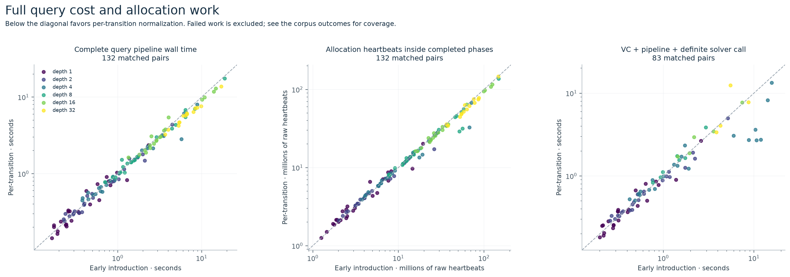
This separate tracing experiment counts completed inner and outer simp runs for Blockchain, FloodSet and Ring. It is excluded from the main timing sweep. Failed phases have no complete counter and are omitted. The per-call step limit resets for each hypothesis, so these counts help distinguish reduced traversal from a larger aggregate step allowance. Counters · Matched phases · Findings and limits.
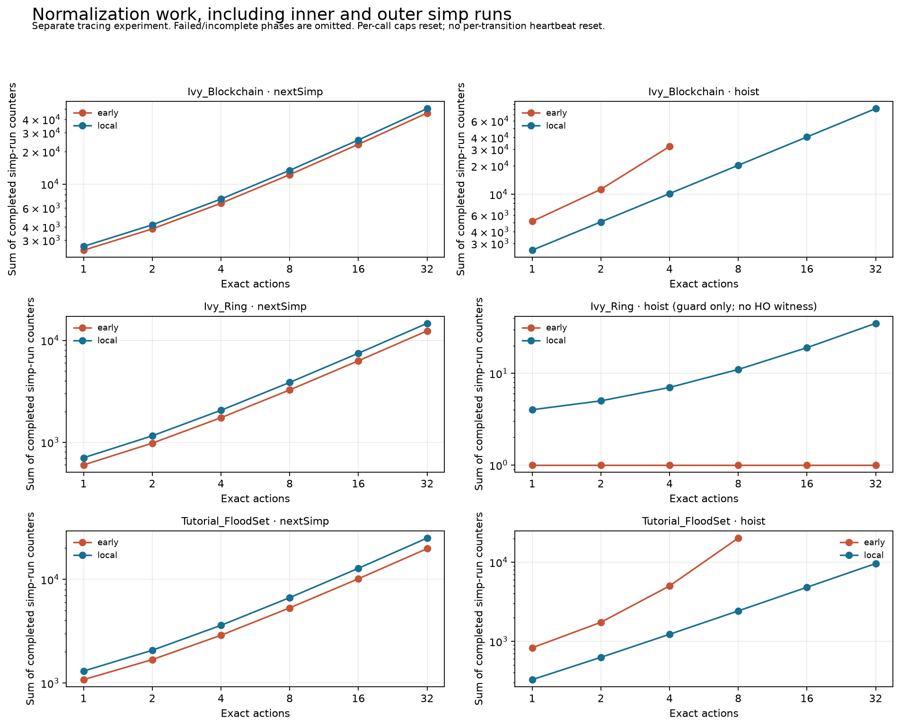
Three fresh replays of selected primary changes, separate 30-second checks, and a controlled assertion/declaration-order experiment are documented in SOLVER_BEHAVIOR.txt. They do not replace the fixed-limit primary results above. Repeated results · Selection rules and cells · 30-second checks · Order/grouping probe.
For each file this view selects the largest sampled exact depth with a completed local query. Depths vary and are labeled; this is not a monotone maximum-depth claim. The full matrix records all failures. Exact seconds by phase.
These figures include only cells completed in both variants. They are a subset of the corpus; the outcome matrices above show failures and missing measurements. Failure and timeout durations never appear as completed work. Query-stage times exclude process startup, model setup, query/VC elaboration, and solver execution; the query-plus-solver plot adds the separately measured successful solver call.
The preprocessing comparison also includes cases whose later SMT embedding or solver failed; only the fully completed Veil phase sequence is timed.
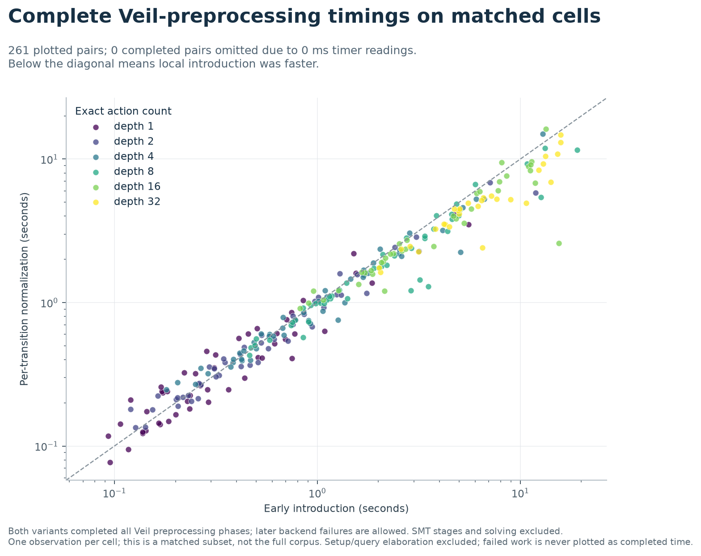
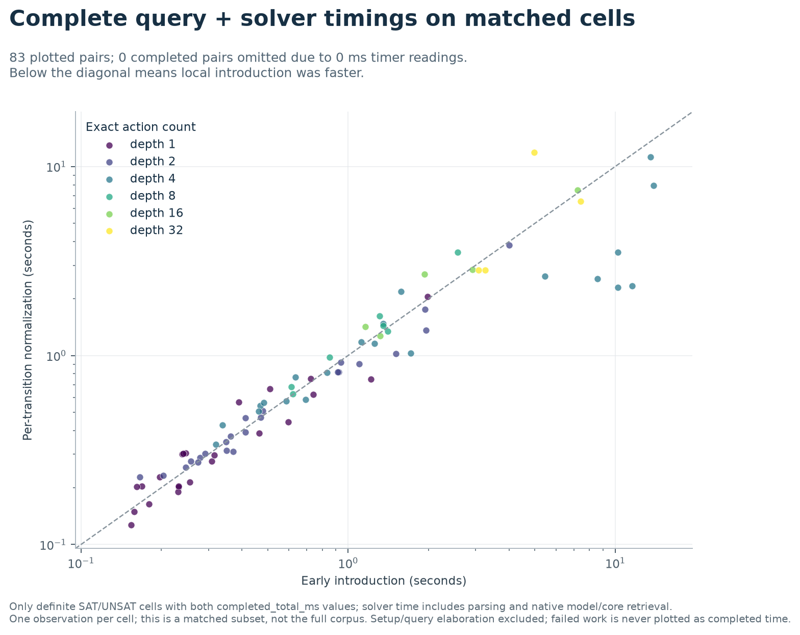
Cell code = phase:limit. N nextSimp; H hoist; D destruct/dsimp; M smtSimp; I intros; S trace split; K hint audit; E embedding; Z normalize; T translate; W serialize; G setup; V query/VC elaboration; Q solver. S simp steps; R recursion; B heartbeat; P process timeout; ! other error. Hover for details.
| Model / exact query | 1 early |
1 local |
2 early |
2 local |
4 early |
4 local |
8 early |
8 local |
16 early |
16 local |
32 early |
32 local |
|---|---|---|---|---|---|---|---|---|---|---|---|---|
| AWS_AWSBuggy Examples/AWS/AWSBuggy.lean query / notesassert (dns_valid = false)DnsConsistent safety, line132 Buggy DNS race variant; same Veil namespace as AWSFixed and TLA/AWSDnsRace. |
E:! | E:! | E:! | E:! | E:! | E:! | E:R | E:R | E:R | E:R | D:B | E:R |
| AWS_AWSFixed Examples/AWS/AWSFixed.lean query / notesassert (dns_valid = false)DnsConsistent safety, line125 Repaired DNS race variant; include separately from AWSBuggy. |
UNSAT | UNSAT | UNSAT | UNSAT | UNSAT | UNSAT | E:R | E:R | E:R | E:R | E:R | E:R |
| Ivy_Blockchain Examples/Ivy/Blockchain.lean query / notesassert (¬ (∀ n1 n2 n b t tr t1 t2, (((honest n1 ∧ honest n2) → ((block_confirmed n1 b t ∧ block_confirmed n2 b t) ∨ (¬ block_confirmed n1 b t ∧ ¬ block_confirmed n2 b t))) ∧ ((honest n1 ∧ honest n2) → ((transaction_confirmed tr n1 ∧ transaction_confirmed tr n2) ∨ (¬ transaction_confirmed tr n1 ∧ ¬ transaction_confirmed tr n2))) ∧ ((honest n ∧ leader n t2 ∧ transaction_time tr t1 ∧ tot.le t1 t2 ∧ broadcasted n ∧ honest n1) → transaction_confirmed tr n1))))Entire combined safety declaration, lines87–90 Negates all three conjuncts together and explicitly binds every source autoimplicit variable. |
UNSAT | UNSAT | UNSAT | UNSAT | UNSAT | UNSAT | H:S | UNSAT | H:S | UNSAT | H:B | D:B |
| Ivy_ChordRingMaintenance Examples/Ivy/ChordRingMaintenance.lean query / notesassert (∃ n, error n)no_error safety, line143 |
Q:! | Q:! | Q:! | Q:! | Q:! | Q:! | Q:! | Q:! | Q:! | Q:! | M:B | M:B |
| Ivy_DecentralizedLock Examples/Ivy/DecentralizedLock.lean query / notesassert (∃ x y, has_lock x ∧ has_lock y ∧ x ≠ y)mutex safety, line51 |
UNSAT | UNSAT | UNSAT | UNSAT | UNSAT | UNSAT | UNSAT | UNSAT | UNSAT | UNSAT | UNSAT | UNSAT |
| Ivy_MultiSigAll Examples/Ivy/MultiSigAll.lean query / notesassert (∃ n k v d, cancelled n k v d ∧ ¬ expired d)cancelled_after_deadline safety, line78 Five sorts and high-arity relations; distinct query from the earlier paid-tuple reachability experiment. |
UNSAT | UNSAT | UNSAT | UNSAT | UNSAT | UNSAT | Q:T | Q:T | Q:T | Q:T | M:B | D:B |
| Ivy_MultiSigMajority Examples/Ivy/MultiSigMajority.lean query / notesassert (∃ n k v d, cancelled n k v d ∧ ¬ expired d)cancelled_after_deadline safety, line88 Quorum-based variant, distinct from MultiSigAll. |
UNSAT | UNSAT | UNSAT | UNSAT | UNSAT | UNSAT | Q:T | Q:T | Q:T | Q:T | M:B | M:B |
| Ivy_NOPaxos Examples/Ivy/NOPaxos.lean query / notesassert (∃ s v1 v2, gh_committed s v1 ∧ gh_committed s v2 ∧ v1 ≠ v2)consistency safety, line243 Relational Ivy model; distinct from the collection-based TLA/NOPaxos. |
UNSAT | UNSAT | UNSAT | UNSAT | UNSAT | UNSAT | Q:T | Q:T | M:B | M:B | N:S | N:B |
| Ivy_PaxosEPR Examples/Ivy/PaxosEPR.lean query / notesassert (∃ n1 r1 v1 n2 r2 v2, decision n1 r1 v1 ∧ decision n2 r2 v2 ∧ v1 ≠ v2)coherence safety, line91 |
T:! | T:! | T:! | T:! | T:! | T:! | T:! | T:! | T:! | T:! | T:! | T:! |
| Ivy_PaxosFirstOrder Examples/Ivy/PaxosFirstOrder.lean query / notesassert (∃ n1 r1 v1 n2 r2 v2, decision n1 r1 v1 ∧ decision n2 r2 v2 ∧ v1 ≠ v2)coherence safety, line99 Distinct first-order variant of PaxosEPR. |
UNSAT | UNSAT | UNSAT | UNSAT | Q:T | Q:T | Q:T | Q:T | Q:T | Q:T | Q:T | Q:T |
| Ivy_ReliableBroadcast Examples/Ivy/ReliableBroadcast.lean query / notesassert (∃ src dst r v, ¬ is_byz src ∧ ¬ is_byz dst ∧ voted dst src r v ∧ ¬ (sent src r ∧ initial_value src r v))vote_integrity safety, lines122–124 Full Byzantine/round-indexed model; distinct from Simulate/ReliableBroadcast. |
T:! | T:! | T:! | T:! | T:! | T:! | T:! | T:! | T:! | T:! | T:! | T:! |
| Ivy_RicartAgrawala Examples/Ivy/RicartAgrawala.lean query / notesassert (∃ n1 n2, holds n1 ∧ holds n2 ∧ n1 ≠ n2)mutual_exclusion safety, line51 |
UNSAT | UNSAT | UNSAT | UNSAT | UNSAT | UNSAT | Q:T | Q:T | Q:T | Q:T | Q:T | Q:T |
| Ivy_Ring Examples/Ivy/Ring.lean query / notesassert (∃ n1 n2, n1 ≠ n2 ∧ leader n1 ∧ leader n2)Existing unsat trace, lines57–60; single_leader safety, line42 Relational ring; overlaps Tutorial/Ring and POPL26/RingDec. Prefix explicitly sets veil.smt.trust=false. |
UNSAT | UNSAT | UNSAT | UNSAT | UNSAT | UNSAT | Q:T | Q:T | Q:T | Q:T | Q:T | Q:T |
| Ivy_SuzukiKasami Examples/Ivy/SuzukiKasami.lean query / notesassert (∃ n m, crit n ∧ crit m ∧ n ≠ m)mutex invariant, line111 No safety declaration; select the named mutex invariant. |
Q:! | Q:! | Q:! | Q:! | Q:! | Q:! | Q:! | Q:! | Q:! | Q:! | M:B | M:B |
| Ivy_TwoPhaseCommit Examples/Ivy/TwoPhaseCommit.lean query / notesassert (¬ (∀ n n2, (decide_commit n → ¬ decide_abort n2) ∧ (decide_commit n → vote_yes n2) ∧ (decide_abort n → abort_flag)))Entire combined safety declaration, lines85–87 Negates all three conjuncts: commit/abort agreement, unanimous yes votes on commit, and abort-flag consistency. |
UNSAT | UNSAT | UNSAT | UNSAT | UNSAT | UNSAT | UNSAT | Q:T | Q:T | Q:T | Q:T | Q:T |
| Ivy_VerticalPaxosFirstOrder Examples/Ivy/VerticalPaxosFirstOrder.lean query / notesassert (∃ n1 r1 v1 n2 r2 v2, decision n1 r1 v1 ∧ decision n2 r2 v2 ∧ v1 ≠ v2)coherence safety, line132 Post-#gen_spec manual proof section is excluded; all model/invariant declarations are retained. |
T:! | T:! | T:! | T:! | T:! | T:! | T:! | T:! | H:B | T:! | H:B | D:B |
| Puzzles_DieHard Examples/Puzzles/DieHard.lean query / notesassert (big = 4)Negation of not_solved invariant, line59 Uses the puzzle objective rather than the structural jug-capacity invariant. |
UNSAT | UNSAT | UNSAT | UNSAT | UNSAT | UNSAT | SAT | SAT | Q:T | Q:T | E:R | E:R |
| Puzzles_Prisoners Examples/Puzzles/Prisoners.lean query / notesassert (Done ∧ ∃ p, p ≠ Counter ∧ timesSwitched p = 0)Safety declaration, line85 Concrete cardPrisoner=4 from #model_check is not imposed; symbolic theory parameters remain general. |
SAT | SAT | SAT | SAT | SAT | SAT | SAT | SAT | SAT | SAT | E:R | E:R |
| Puzzles_RiverCrossing Examples/Puzzles/RiverCrossing.lean query / notesassert (goat_pos = far ∧ wolf_pos = far ∧ cabbage_pos = far ∧ farmer_pos = far)Negation of unsolved invariant, line81 Uses the puzzle objective; retains action safety guards. |
UNSAT | UNSAT | UNSAT | UNSAT | UNSAT | UNSAT | UNSAT | UNSAT | UNSAT | UNSAT | UNSAT | UNSAT |
| Simulate_CheckpointLeaseFailover Examples/Simulate/CheckpointLeaseFailover.lean query / notesassert (∃ l expiry now, checkpointed_until l expiry ∧ current_epoch now ∧ epochOrd.le expiry now ∧ active_on_leader l)checkpointed_expiry_respected safety, lines77–80 Designed for simulation, but retained to expose symbolic-backend limitations. |
UNSAT | UNSAT | UNSAT | UNSAT | SAT | SAT | SAT | SAT | SAT | Q:T | Q:T | Q:T |
| Simulate_LeaseKeepaliveRace Examples/Simulate/LeaseKeepaliveRace.lean query / notesassert (∃ c k, keepalive_succeeded c ∧ key_attached c k ∧ ¬ key_present k)renewal_keeps_keys_live safety, lines73–74 Designed for simulation; no concrete client/key domain bounds are imported. |
UNSAT | UNSAT | UNSAT | UNSAT | UNSAT | UNSAT | SAT | SAT | SAT | SAT | SAT | SAT |
| Simulate_ReliableBroadcast Examples/Simulate/ReliableBroadcast.lean query / notesassert (∃ n1 n2 v1 v2, delivered n1 v1 ∧ delivered n2 v2 ∧ v1 ≠ v2)agreement safety, lines61–62 Simplified simulation model, distinct from Ivy/ReliableBroadcast. |
UNSAT | UNSAT | UNSAT | UNSAT | UNSAT | UNSAT | Q:T | Q:T | Q:T | Q:T | Q:T | Q:T |
| StellarConsensus_SCP Examples/StellarConsensus/SCP.lean query / notesassert (∃ n1 n2 b1 b2 v1 v2, intertwined n1 ∧ intertwined n2 ∧ confirmed_committed n1 b1 v1 ∧ confirmed_committed n2 b2 v2 ∧ v1 ≠ v2)intertwined_safe safety, lines218–220 Requires prebuilt Examples.StellarConsensus.SCPTheory; manual proof section after #gen_spec is excluded. |
T:! | T:! | T:! | T:! | T:! | T:! | T:! | T:! | M:B | M:B | D:B | D:B |
| Synchronous_FasterFloodSet Examples/Synchronous/FasterFloodSet.lean query / notesassert (∃ n1 n2 v1 v2, decision n1 v1 ∧ decision n2 v2 ∧ v1 ≠ v2)agreement safety, lines179–180 Optimized collection-based FloodSet variant; same namespace as other FloodSet files, isolated process required. |
T:! | T:! | T:! | T:! | T:! | T:! | T:! | T:! | H:S | E:R | H:S | E:R |
| Synchronous_FloodSet Examples/Synchronous/FloodSet.lean query / notesassert (∃ n1 n2 v1 v2, decision n1 v1 ∧ decision n2 v2 ∧ v1 ≠ v2)agreement safety, lines137–138 Contains genuine function-valued delivery choices. |
UNSAT | UNSAT | UNSAT | UNSAT | UNSAT | UNSAT | Q:T | Q:T | E:R | E:R | H:B | E:R |
| TLA_AWSDnsRace Examples/TLA/AWSDnsRace.lean query / notesassert (current_plan > 0 ∧ plan_deleted current_plan true)NeverDeleteActive invariant, line89 Finite-enum/Fin-based DNS race model; distinct from both AWS variants. |
E:! | E:! | E:! | E:! | E:! | E:! | E:! | E:! | E:R | E:R | E:R | E:R |
| TLA_Bakery Examples/TLA/Bakery.lean query / notesassert (∃ i j, i ≠ j ∧ pc i = cs ∧ pc j = cs)mutual_exclusion safety, line192 |
E:! | E:! | E:! | E:! | E:! | E:! | E:! | E:R | E:R | E:R | D:B | M:B |
| TLA_BcastByz Examples/TLA/BcastByz.lean query / notesassert (∃ p, isCorrect p ∧ pc p = AC)PCState.AC and protocol step actions; no declared protocol safety property Uses correct-process acceptance, rather than the static partition/cardinality sanity invariants. Contains collections and an Enumeration parameter. |
E:! | E:! | E:! | E:! | E:! | E:! | E:! | E:! | E:R | E:R | E:R | E:R |
| TLA_BuggyCircularBuffer Examples/TLA/BuggyCircularBuffer.lean query / notesassert (count > BUFFER_SIZE)Safety declaration, line58 |
E:! | E:! | E:! | E:! | E:! | E:! | E:! | E:! | E:! | E:! | E:R | E:R |
| TLA_EPaxos Examples/TLA/EPaxos.lean query / notesassert (∃ i, commitSet.count (committedMap i) > 1)Consistency invariant, lines1378–1379 Large collection/message model. Keep backend/elaboration failures as outcomes; do not replace its query with True. |
E:R | E:R | E:R | E:R | E:R | E:R | E:R | E:R | D:B | D:B | D:B | H:B |
| TLA_EWD840 Examples/TLA/EWD840.lean query / notesassert (terminationDetected ∧ ¬ terminated)TerminationDetection invariant, line103 Uses earlier ghost definitions; Fin domain size is a symbolic Nat parameter. |
E:! | E:! | E:! | E:! | E:! | E:! | E:! | E:! | E:R | E:R | E:R | E:R |
| TLA_German Examples/TLA/German.lean query / notesassert (¬ (∀ i j, i ≠ j → (((cache i).state = cE → (cache j).state = cI) ∧ ((cache i).state = cS → ((cache j).state = cI ∨ (cache j).state = cS)))))ctrlProp invariant, lines197–200 Explicitly binds the autoimplicit I/J variables from the source invariant. |
T:! | T:! | T:! | T:! | T:! | T:! | T:! | T:! | T:! | T:! | M:B | T:! |
| TLA_KVSnap Examples/TLA/KVSnap.lean query / notesassert (¬ serialization)Serialization safety, line277; ghost serialization, lines273–275 Retains CC definitions and Veil.Util.Permutations import. Serialization uses enumerations, lists and permutations; backend support is not assumed. |
E:! | E:! | E:! | E:! | E:! | E:! | E:! | E:! | E:R | E:R | E:R | E:R |
| TLA_KeyValueStore Examples/TLA/KeyValueStore.lean query / notesassert (¬ (snapshot_isolation ∧ transaction_cleanup))Txlifecycle invariant, line159 Both ghost predicates are defined before #gen_spec. Uses partial functions and sets. |
E:! | E:! | E:! | E:! | E:! | E:! | E:R | E:R | E:R | E:R | E:R | E:R |
| TLA_MultiPaxos Examples/TLA/MultiPaxos.lean query / notesassert (∃ v1 v2 s, Chosen v1 s ∧ Chosen v2 s ∧ v1 ≠ v2)consistency invariant, lines346–347 Uses earlier Chosen ghost predicate and collection-backed messages. |
E:! | E:! | E:! | E:R | E:R | E:R | E:R | E:R | E:R | E:R | M:B | M:B |
| TLA_MutexViolation Examples/TLA/MutexViolation.lean query / notesassert (∃ i j, i ≠ j ∧ pc i = cs ∧ pc j = cs)mutual_exclusion invariant, line313 Contains list-valued call stacks; symbolic translation may be unsupported independently of the optimization. |
E:! | E:! | E:! | E:! | E:! | E:! | E:R | E:R | E:R | E:R | D:B | M:B |
| TLA_NOPaxos Examples/TLA/NOPaxos.lean query / notesassert (¬ Linearizability)linearizability invariant, line944; ghost predicate, line316 Large collection/list/array model. Prefix sets veil.deferVCGeneration=true and maxHeartbeats=1600000. |
E:! | E:R | E:R | E:R | E:R | E:R | D:B | D:B | N:S | H:B | N:S | N:B |
| TLA_Paxos Examples/TLA/Paxos.lean query / notesassert (∃ v1 v2, Chosen v1 ∧ Chosen v2 ∧ v1 ≠ v2)Consistency invariant, line298 Uses earlier Chosen ghost predicate and bounded ballot datatype. |
E:! | E:! | E:! | E:! | E:! | E:! | E:! | E:! | E:R | Z:B | H:B | H:B |
| TLA_Peterson Examples/TLA/Peterson.lean query / notesassert (∃ i j, i ≠ j ∧ lockcs i ∧ lockcs j)mutual_exclusion safety, lines108–109 lockcs is defined before #gen_spec; finite process/control enums. |
UNSAT | UNSAT | UNSAT | UNSAT | UNSAT | UNSAT | UNSAT | Q:T | Q:T | Q:T | Q:T | Q:T |
| TLA_Raft Examples/TLA/Raft.lean query / notesassert (∃ i j, i ≠ j ∧ currentTerm i = currentTerm j ∧ pcState i Leader ∧ pcState j Leader)BothLeader/MoreThanOneLeader specification comments, lines1059–1066 No active safety/invariant declaration. Tests the documented election-safety condition. Retains source-specific large heartbeat/typeclass limits. |
E:R | E:R | E:R | E:R | D:B | E:R | H:B | M:B | H:B | H:B | N:B | N:B |
| TLA_Room Examples/TLA/Room.lean query / notesassert (∃ r g1 g2, guestTset.contains g1 (registered r) ∧ guestTset.contains g2 (registered r) ∧ g1 ≠ g2)registered_at_most_one safety, lines122–123 Collection-based hotel key model. |
E:! | E:! | E:! | E:! | E:! | E:! | E:! | E:R | E:R | E:R | E:R | E:R |
| TLA_SimpleAllocator Examples/TLA/SimpleAllocator.lean query / notesassert (¬ (∀ c1 c2 : client, c1 ≠ c2 → resSet.isEmpty (resSet.intersection (alloc c1) (alloc c2))))resource_mutex invariant, line83 Negates the exact declared predicate; do not replace it by elementwise membership, since the abstract TSet class does not state an intersection-membership law. |
E:! | E:! | E:! | E:! | E:! | E:! | E:! | E:! | E:R | E:R | E:R | E:R |
| TLA_Traffic Examples/TLA/Traffic.lean query / notesassert (at_light = false)Negation of puzzle_unsolvable safety, lines70–72 Reaches the intended puzzle goal: the car leaves the light. |
UNSAT | UNSAT | SAT | SAT | SAT | SAT | SAT | SAT | SAT | SAT | SAT | SAT |
| TLA_TwoPhaseCommit Examples/TLA/TwoPhaseCommit.lean query / notesassert (∃ rm1 rm2, (rmState rm1 == committed) ∧ (rmState rm2 == aborted))TCConsistency invariant, lines219–220 Distinct finite-control-state model from Ivy/TwoPhaseCommit; preserves the original Bool equality predicate. |
UNSAT | UNSAT | UNSAT | UNSAT | UNSAT | UNSAT | Q:T | UNSAT | Q:T | Q:T | Q:T | Q:T |
| Tutorial_FloodSet Examples/Tutorial/FloodSet.lean query / notesassert (¬ (∀ n1 n2 v1 v2, decision n1 v1 ∧ decision n2 v2 → v1 = v2))Existing agreement_violation trace, lines392–395 Tutorial variant overlaps Synchronous/FloodSet but is retained as its own model-bearing file. |
UNSAT | UNSAT | UNSAT | UNSAT | Q:T | Q:T | Q:T | Q:T | H:S | E:R | H:S | E:R |
| Tutorial_POPL26_RingDec Examples/Tutorial/POPL26/RingDec.lean query / notesassert (∃ n1 n2, n1 ≠ n2 ∧ leader n1 ∧ leader n2)Existing unsat trace, lines56–59 Near-duplicate relational Ring teaching variant, intentionally retained for complete file coverage. |
UNSAT | UNSAT | UNSAT | UNSAT | UNSAT | UNSAT | Q:T | Q:T | Q:T | Q:T | Q:T | Q:T |
| Tutorial_POPL26_RingFin Examples/Tutorial/POPL26/RingFin.lean query / notesassert (leader.length > 1)single_leader safety, line53 List-based concrete implementation over a symbolic node type; distinct from relational Ring. No concrete nextNode/topology assignment is imported. |
T:! | T:! | T:! | T:! | T:! | T:! | T:! | T:! | T:! | T:! | T:! | T:! |
| Tutorial_POPL26_RingNat Examples/Tutorial/POPL26/RingNat.lean query / notesassert (leader.length > 1)single_leader safety, line50 List-based Nat implementation. Concrete allNodes/nextNode values from #model_check are intentionally not imposed. |
T:! | T:! | T:! | T:! | T:! | T:! | T:! | T:! | T:! | T:! | T:! | T:! |
| Tutorial_Ring Examples/Tutorial/Ring.lean query / notesassert (∃ l1 l2, leader l1 ∧ leader l2 ∧ l1 ≠ l2)single_leader safety, line217 Tutorial relational Ring, retained separately from Ivy/Ring and POPL26/RingDec. |
UNSAT | UNSAT | UNSAT | UNSAT | UNSAT | UNSAT | Q:T | Q:T | Q:T | Q:T | Q:T | Q:T |
The solid query curves use full pipeline wall time; dashed preprocessing curves sum completed Veil stage timers. Solver curves include only completed SAT/UNSAT calls to the entire native Smt.solve wrapper. Timeouts and unknown results appear only in the outcome strip; their elapsed durations are not plotted as completed work.
assert (dns_valid = false)
| Exact actions | Early introduction | Per-transition normalization |
|---|---|---|
| 1 | — | — |
| 2 | — | — |
| 4 | — | — |
| 8 | — | — |
| 16 | — | — |
| 32 | — | — |
A dash means no serialized query was emitted. Query hashes and exact byte counts are in queries.csv; these are the files replayed by the solver.
assert (dns_valid = false)
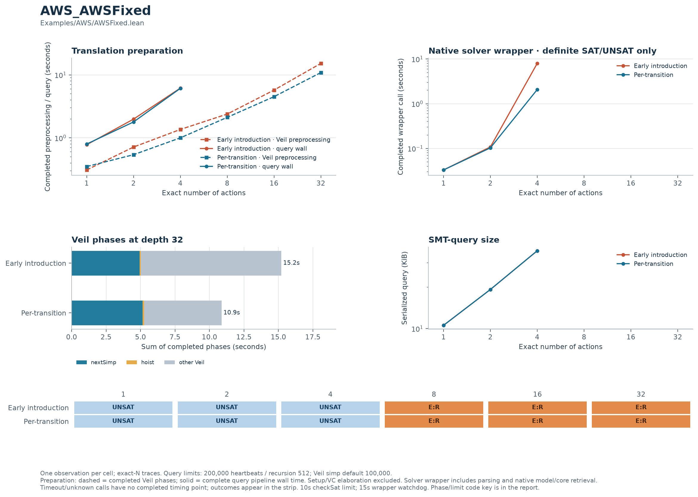
| Exact actions | Early introduction | Per-transition normalization |
|---|---|---|
| 1 | SMT-LIB 10817 bytes | SMT-LIB 10825 bytes |
| 2 | SMT-LIB 19656 bytes | SMT-LIB 19667 bytes |
| 4 | SMT-LIB 37480 bytes | SMT-LIB 37497 bytes |
| 8 | — | — |
| 16 | — | — |
| 32 | — | — |
A dash means no serialized query was emitted. Query hashes and exact byte counts are in queries.csv; these are the files replayed by the solver.
assert (¬ (∀ n1 n2 n b t tr t1 t2, (((honest n1 ∧ honest n2) → ((block_confirmed n1 b t ∧ block_confirmed n2 b t) ∨ (¬ block_confirmed n1 b t ∧ ¬ block_confirmed n2 b t))) ∧ ((honest n1 ∧ honest n2) → ((transaction_confirmed tr n1 ∧ transaction_confirmed tr n2) ∨ (¬ transaction_confirmed tr n1 ∧ ¬ transaction_confirmed tr n2))) ∧ ((honest n ∧ leader n t2 ∧ transaction_time tr t1 ∧ tot.le t1 t2 ∧ broadcasted n ∧ honest n1) → transaction_confirmed tr n1))))
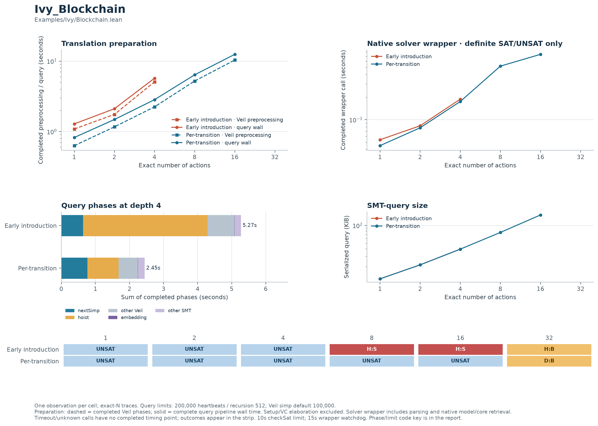
| Exact actions | Early introduction | Per-transition normalization |
|---|---|---|
| 1 | SMT-LIB 12898 bytes | SMT-LIB 12872 bytes |
| 2 | SMT-LIB 22170 bytes | SMT-LIB 22169 bytes |
| 4 | SMT-LIB 40725 bytes | SMT-LIB 40763 bytes |
| 8 | — | SMT-LIB 77951 bytes |
| 16 | — | SMT-LIB 153616 bytes |
| 32 | — | — |
A dash means no serialized query was emitted. Query hashes and exact byte counts are in queries.csv; these are the files replayed by the solver.
assert (∃ n, error n)
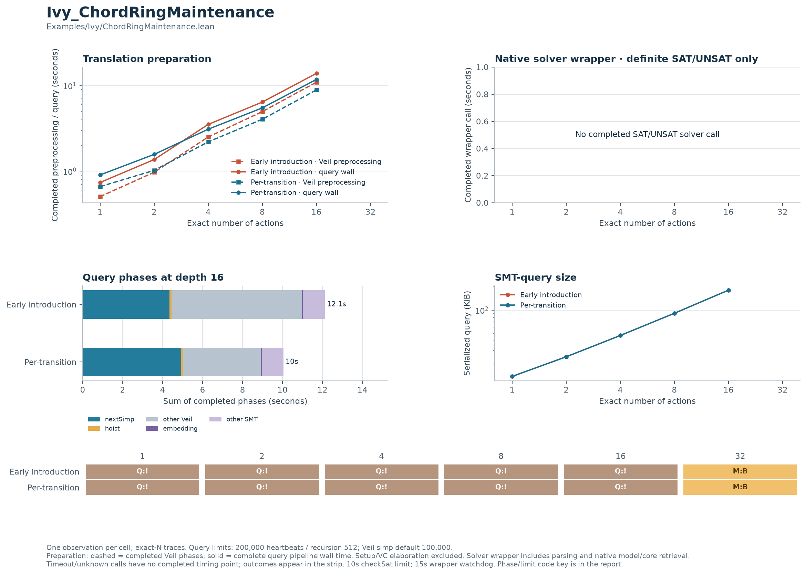
| Exact actions | Early introduction | Per-transition normalization |
|---|---|---|
| 1 | SMT-LIB 14147 bytes | SMT-LIB 14146 bytes |
| 2 | SMT-LIB 25426 bytes | SMT-LIB 25428 bytes |
| 4 | SMT-LIB 47984 bytes | SMT-LIB 47992 bytes |
| 8 | SMT-LIB 93100 bytes | SMT-LIB 93120 bytes |
| 16 | SMT-LIB 185703 bytes | SMT-LIB 185747 bytes |
| 32 | — | — |
A dash means no serialized query was emitted. Query hashes and exact byte counts are in queries.csv; these are the files replayed by the solver.
assert (∃ x y, has_lock x ∧ has_lock y ∧ x ≠ y)
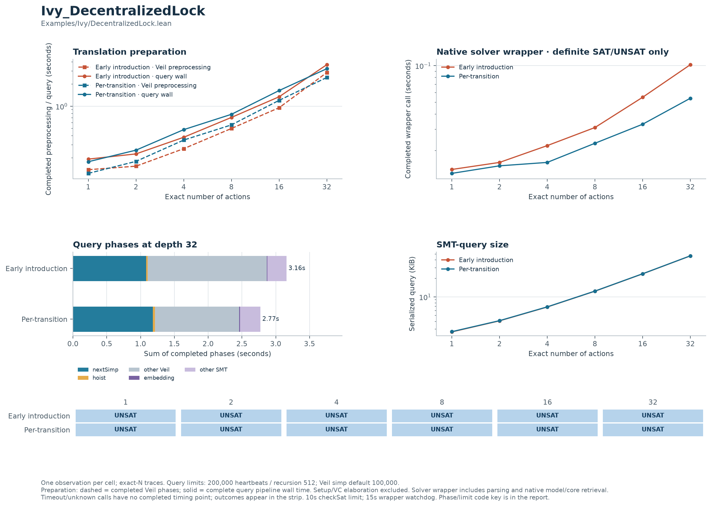
| Exact actions | Early introduction | Per-transition normalization |
|---|---|---|
| 1 | SMT-LIB 2764 bytes | SMT-LIB 2788 bytes |
| 2 | SMT-LIB 4186 bytes | SMT-LIB 4213 bytes |
| 4 | SMT-LIB 7030 bytes | SMT-LIB 7063 bytes |
| 8 | SMT-LIB 12718 bytes | SMT-LIB 12763 bytes |
| 16 | SMT-LIB 24366 bytes | SMT-LIB 24435 bytes |
| 32 | SMT-LIB 47758 bytes | SMT-LIB 47875 bytes |
A dash means no serialized query was emitted. Query hashes and exact byte counts are in queries.csv; these are the files replayed by the solver.
assert (∃ n k v d, cancelled n k v d ∧ ¬ expired d)
| Exact actions | Early introduction | Per-transition normalization |
|---|---|---|
| 1 | SMT-LIB 11419 bytes | SMT-LIB 11442 bytes |
| 2 | SMT-LIB 20559 bytes | SMT-LIB 20585 bytes |
| 4 | SMT-LIB 38839 bytes | SMT-LIB 38871 bytes |
| 8 | SMT-LIB 75399 bytes | SMT-LIB 75443 bytes |
| 16 | SMT-LIB 149759 bytes | SMT-LIB 149827 bytes |
| 32 | — | — |
A dash means no serialized query was emitted. Query hashes and exact byte counts are in queries.csv; these are the files replayed by the solver.
assert (∃ n k v d, cancelled n k v d ∧ ¬ expired d)
| Exact actions | Early introduction | Per-transition normalization |
|---|---|---|
| 1 | SMT-LIB 11767 bytes | SMT-LIB 11779 bytes |
| 2 | SMT-LIB 21066 bytes | SMT-LIB 21081 bytes |
| 4 | SMT-LIB 39664 bytes | SMT-LIB 39685 bytes |
| 8 | SMT-LIB 76860 bytes | SMT-LIB 76893 bytes |
| 16 | SMT-LIB 152526 bytes | SMT-LIB 152583 bytes |
| 32 | — | — |
A dash means no serialized query was emitted. Query hashes and exact byte counts are in queries.csv; these are the files replayed by the solver.
assert (∃ s v1 v2, gh_committed s v1 ∧ gh_committed s v2 ∧ v1 ≠ v2)
| Exact actions | Early introduction | Per-transition normalization |
|---|---|---|
| 1 | SMT-LIB 60158 bytes | SMT-LIB 60179 bytes |
| 2 | SMT-LIB 115030 bytes | SMT-LIB 115054 bytes |
| 4 | SMT-LIB 224774 bytes | SMT-LIB 224804 bytes |
| 8 | SMT-LIB 444262 bytes | SMT-LIB 444304 bytes |
| 16 | — | — |
| 32 | — | — |
A dash means no serialized query was emitted. Query hashes and exact byte counts are in queries.csv; these are the files replayed by the solver.
assert (∃ n1 r1 v1 n2 r2 v2, decision n1 r1 v1 ∧ decision n2 r2 v2 ∧ v1 ≠ v2)
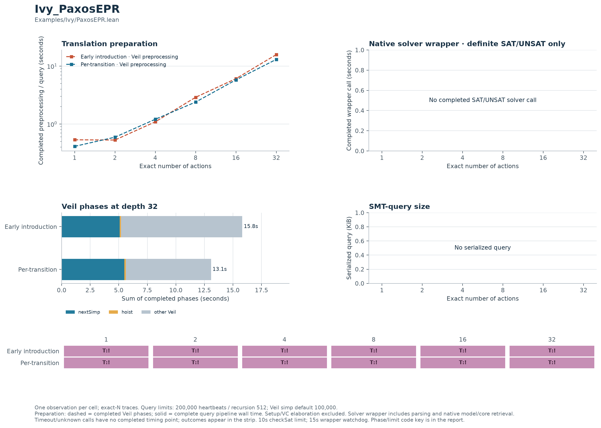
| Exact actions | Early introduction | Per-transition normalization |
|---|---|---|
| 1 | — | — |
| 2 | — | — |
| 4 | — | — |
| 8 | — | — |
| 16 | — | — |
| 32 | — | — |
A dash means no serialized query was emitted. Query hashes and exact byte counts are in queries.csv; these are the files replayed by the solver.
assert (∃ n1 r1 v1 n2 r2 v2, decision n1 r1 v1 ∧ decision n2 r2 v2 ∧ v1 ≠ v2)
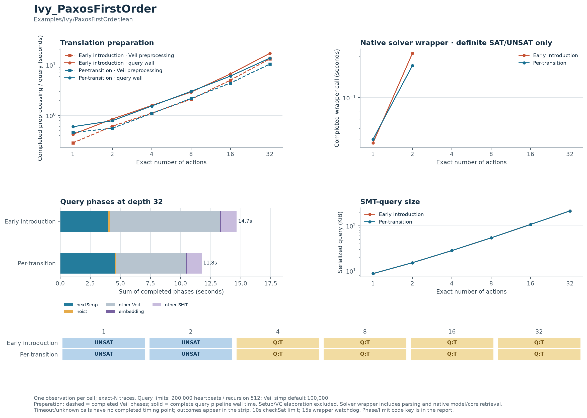
| Exact actions | Early introduction | Per-transition normalization |
|---|---|---|
| 1 | SMT-LIB 8965 bytes | SMT-LIB 8986 bytes |
| 2 | SMT-LIB 15622 bytes | SMT-LIB 15646 bytes |
| 4 | SMT-LIB 28936 bytes | SMT-LIB 28966 bytes |
| 8 | SMT-LIB 55564 bytes | SMT-LIB 55606 bytes |
| 16 | SMT-LIB 109783 bytes | SMT-LIB 109849 bytes |
| 32 | SMT-LIB 218615 bytes | SMT-LIB 218729 bytes |
A dash means no serialized query was emitted. Query hashes and exact byte counts are in queries.csv; these are the files replayed by the solver.
assert (∃ src dst r v, ¬ is_byz src ∧ ¬ is_byz dst ∧ voted dst src r v ∧ ¬ (sent src r ∧ initial_value src r v))
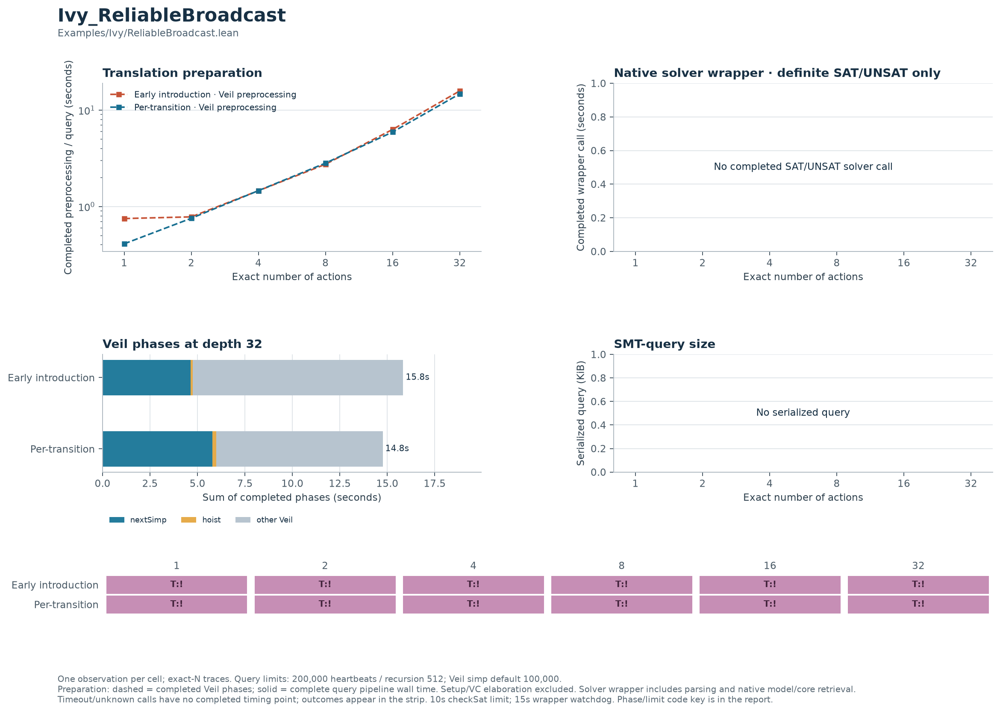
| Exact actions | Early introduction | Per-transition normalization |
|---|---|---|
| 1 | — | — |
| 2 | — | — |
| 4 | — | — |
| 8 | — | — |
| 16 | — | — |
| 32 | — | — |
A dash means no serialized query was emitted. Query hashes and exact byte counts are in queries.csv; these are the files replayed by the solver.
assert (∃ n1 n2, holds n1 ∧ holds n2 ∧ n1 ≠ n2)
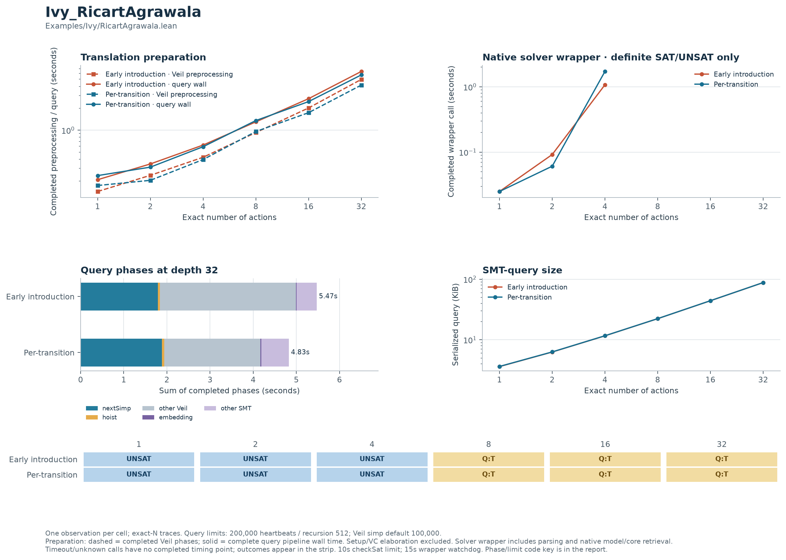
| Exact actions | Early introduction | Per-transition normalization |
|---|---|---|
| 1 | SMT-LIB 3699 bytes | SMT-LIB 3719 bytes |
| 2 | SMT-LIB 6439 bytes | SMT-LIB 6462 bytes |
| 4 | SMT-LIB 11919 bytes | SMT-LIB 11948 bytes |
| 8 | SMT-LIB 22879 bytes | SMT-LIB 22920 bytes |
| 16 | SMT-LIB 45272 bytes | SMT-LIB 45337 bytes |
| 32 | SMT-LIB 90232 bytes | SMT-LIB 90345 bytes |
A dash means no serialized query was emitted. Query hashes and exact byte counts are in queries.csv; these are the files replayed by the solver.
assert (∃ n1 n2, n1 ≠ n2 ∧ leader n1 ∧ leader n2)
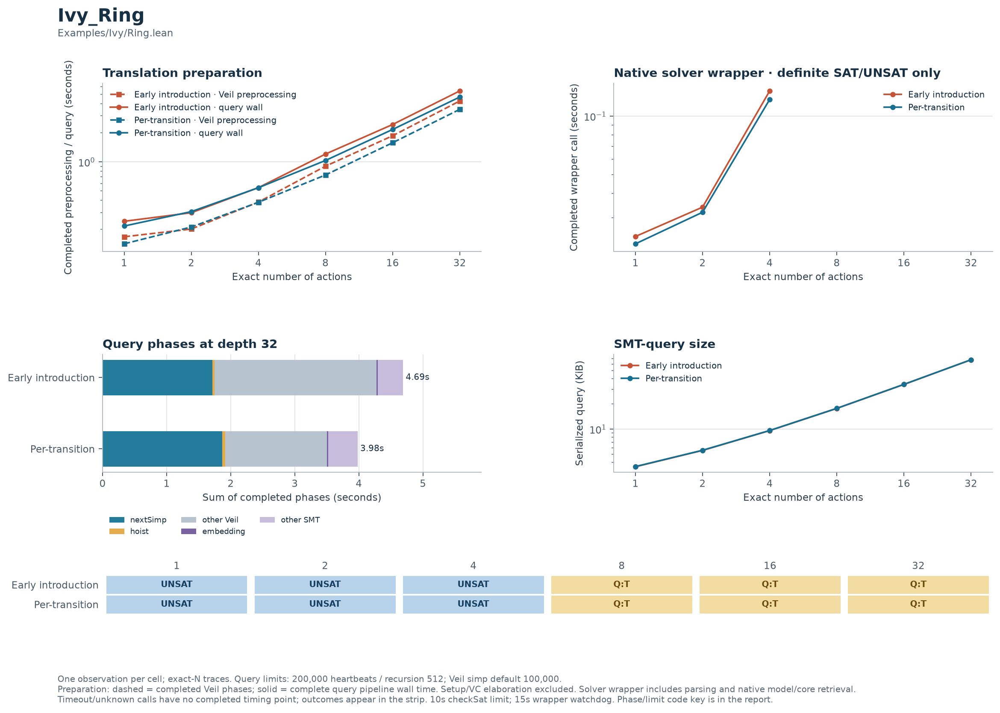
| Exact actions | Early introduction | Per-transition normalization |
|---|---|---|
| 1 | SMT-LIB 3644 bytes | SMT-LIB 3664 bytes |
| 2 | SMT-LIB 5713 bytes | SMT-LIB 5736 bytes |
| 4 | SMT-LIB 9851 bytes | SMT-LIB 9880 bytes |
| 8 | SMT-LIB 18127 bytes | SMT-LIB 18168 bytes |
| 16 | SMT-LIB 35064 bytes | SMT-LIB 35129 bytes |
| 32 | SMT-LIB 69064 bytes | SMT-LIB 69177 bytes |
A dash means no serialized query was emitted. Query hashes and exact byte counts are in queries.csv; these are the files replayed by the solver.
assert (∃ n m, crit n ∧ crit m ∧ n ≠ m)
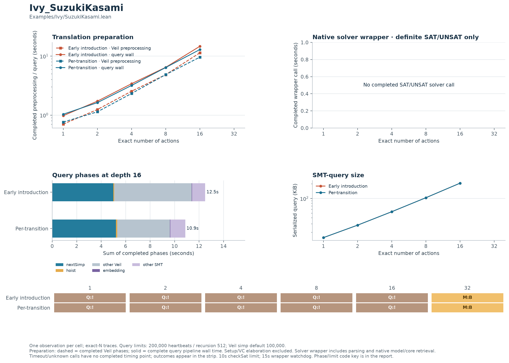
| Exact actions | Early introduction | Per-transition normalization |
|---|---|---|
| 1 | SMT-LIB 16028 bytes | SMT-LIB 16053 bytes |
| 2 | SMT-LIB 28953 bytes | SMT-LIB 28981 bytes |
| 4 | SMT-LIB 54803 bytes | SMT-LIB 54837 bytes |
| 8 | SMT-LIB 106503 bytes | SMT-LIB 106549 bytes |
| 16 | SMT-LIB 212368 bytes | SMT-LIB 212438 bytes |
| 32 | — | — |
A dash means no serialized query was emitted. Query hashes and exact byte counts are in queries.csv; these are the files replayed by the solver.
assert (¬ (∀ n n2, (decide_commit n → ¬ decide_abort n2) ∧ (decide_commit n → vote_yes n2) ∧ (decide_abort n → abort_flag)))
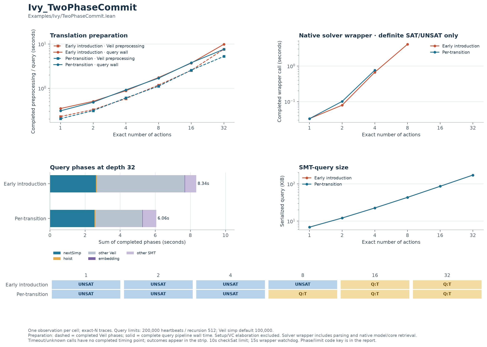
| Exact actions | Early introduction | Per-transition normalization |
|---|---|---|
| 1 | SMT-LIB 7059 bytes | SMT-LIB 7067 bytes |
| 2 | SMT-LIB 12427 bytes | SMT-LIB 12438 bytes |
| 4 | SMT-LIB 23163 bytes | SMT-LIB 23180 bytes |
| 8 | SMT-LIB 44635 bytes | SMT-LIB 44664 bytes |
| 16 | SMT-LIB 88689 bytes | SMT-LIB 88742 bytes |
| 32 | SMT-LIB 177265 bytes | SMT-LIB 177366 bytes |
A dash means no serialized query was emitted. Query hashes and exact byte counts are in queries.csv; these are the files replayed by the solver.
assert (∃ n1 r1 v1 n2 r2 v2, decision n1 r1 v1 ∧ decision n2 r2 v2 ∧ v1 ≠ v2)
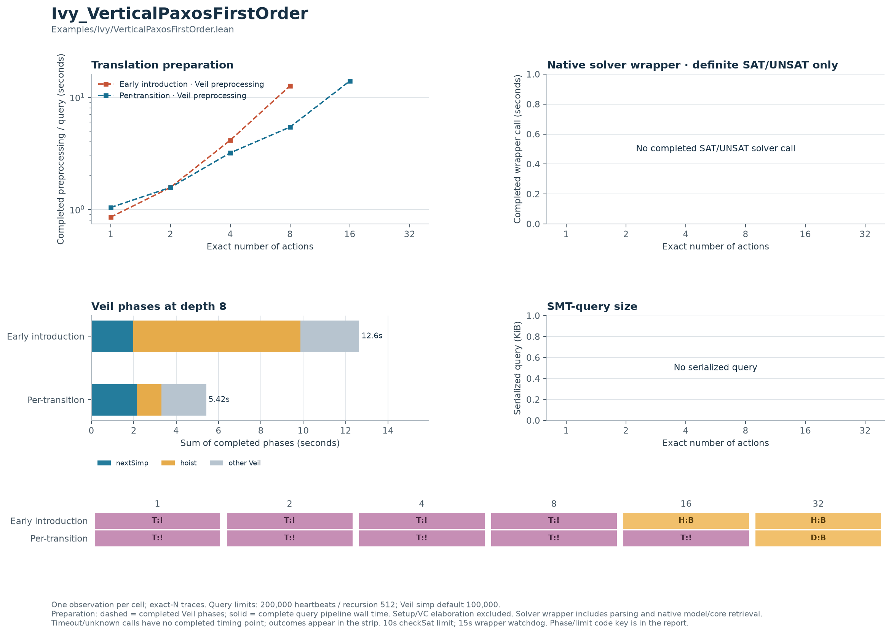
| Exact actions | Early introduction | Per-transition normalization |
|---|---|---|
| 1 | — | — |
| 2 | — | — |
| 4 | — | — |
| 8 | — | — |
| 16 | — | — |
| 32 | — | — |
A dash means no serialized query was emitted. Query hashes and exact byte counts are in queries.csv; these are the files replayed by the solver.
assert (big = 4)
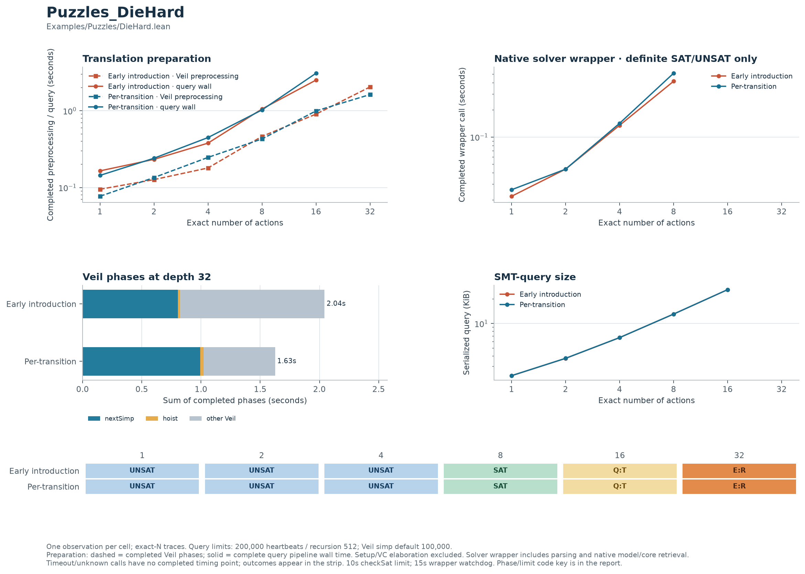
| Exact actions | Early introduction | Per-transition normalization |
|---|---|---|
| 1 | SMT-LIB 2352 bytes | SMT-LIB 2360 bytes |
| 2 | SMT-LIB 3835 bytes | SMT-LIB 3846 bytes |
| 4 | SMT-LIB 6878 bytes | SMT-LIB 6895 bytes |
| 8 | SMT-LIB 13350 bytes | SMT-LIB 13379 bytes |
| 16 | SMT-LIB 26573 bytes | SMT-LIB 26626 bytes |
| 32 | — | — |
A dash means no serialized query was emitted. Query hashes and exact byte counts are in queries.csv; these are the files replayed by the solver.
assert (Done ∧ ∃ p, p ≠ Counter ∧ timesSwitched p = 0)
| Exact actions | Early introduction | Per-transition normalization |
|---|---|---|
| 1 | SMT-LIB 2127 bytes | SMT-LIB 2203 bytes |
| 2 | SMT-LIB 3382 bytes | SMT-LIB 3470 bytes |
| 4 | SMT-LIB 5928 bytes | SMT-LIB 6037 bytes |
| 8 | SMT-LIB 11239 bytes | SMT-LIB 11384 bytes |
| 16 | SMT-LIB 22052 bytes | SMT-LIB 22209 bytes |
| 32 | — | — |
A dash means no serialized query was emitted. Query hashes and exact byte counts are in queries.csv; these are the files replayed by the solver.
assert (goat_pos = far ∧ wolf_pos = far ∧ cabbage_pos = far ∧ farmer_pos = far)
| Exact actions | Early introduction | Per-transition normalization |
|---|---|---|
| 1 | SMT-LIB 4463 bytes | SMT-LIB 4480 bytes |
| 2 | SMT-LIB 7545 bytes | SMT-LIB 7565 bytes |
| 4 | SMT-LIB 13709 bytes | SMT-LIB 13735 bytes |
| 8 | SMT-LIB 26037 bytes | SMT-LIB 26075 bytes |
| 16 | SMT-LIB 51368 bytes | SMT-LIB 51430 bytes |
| 32 | SMT-LIB 102360 bytes | SMT-LIB 102470 bytes |
A dash means no serialized query was emitted. Query hashes and exact byte counts are in queries.csv; these are the files replayed by the solver.
assert (∃ l expiry now, checkpointed_until l expiry ∧ current_epoch now ∧ epochOrd.le expiry now ∧ active_on_leader l)
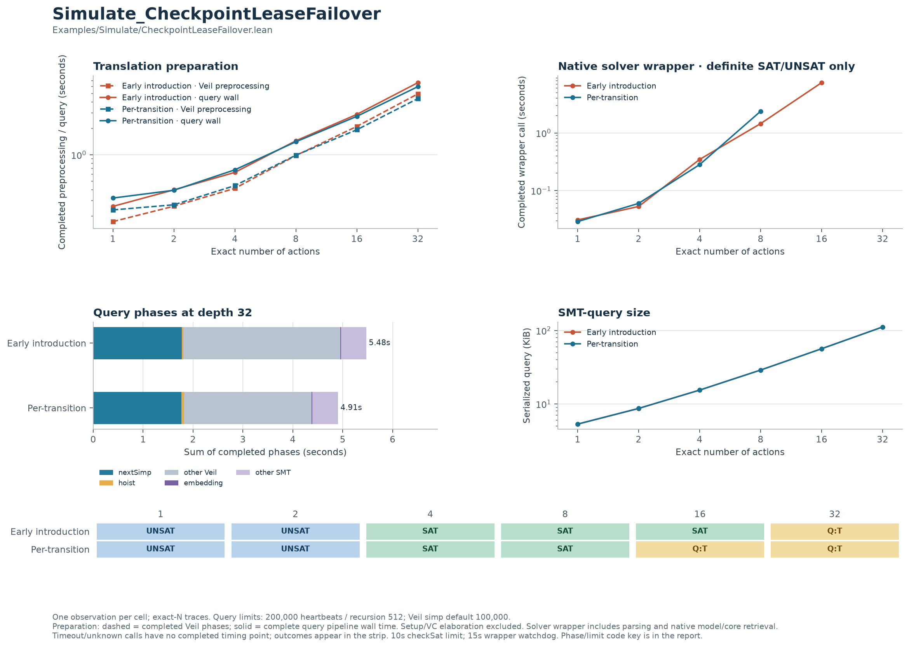
| Exact actions | Early introduction | Per-transition normalization |
|---|---|---|
| 1 | SMT-LIB 5428 bytes | SMT-LIB 5454 bytes |
| 2 | SMT-LIB 8880 bytes | SMT-LIB 8909 bytes |
| 4 | SMT-LIB 15784 bytes | SMT-LIB 15819 bytes |
| 8 | SMT-LIB 29592 bytes | SMT-LIB 29639 bytes |
| 16 | SMT-LIB 57720 bytes | SMT-LIB 57791 bytes |
| 32 | SMT-LIB 114168 bytes | SMT-LIB 114287 bytes |
A dash means no serialized query was emitted. Query hashes and exact byte counts are in queries.csv; these are the files replayed by the solver.
assert (∃ c k, keepalive_succeeded c ∧ key_attached c k ∧ ¬ key_present k)
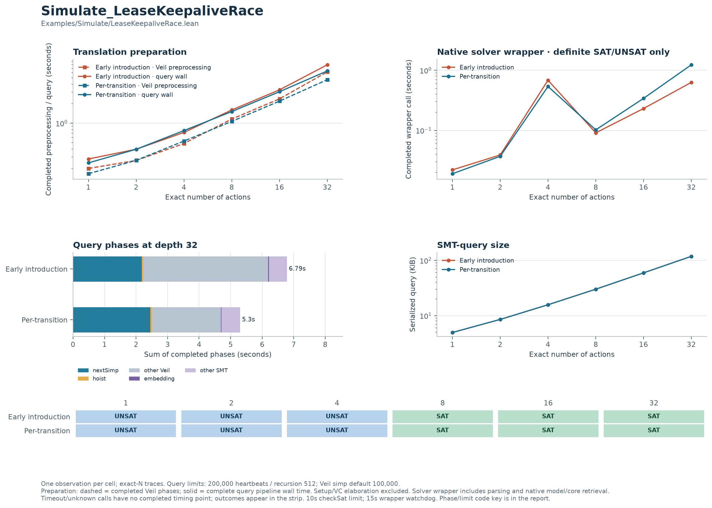
| Exact actions | Early introduction | Per-transition normalization |
|---|---|---|
| 1 | SMT-LIB 5067 bytes | SMT-LIB 5087 bytes |
| 2 | SMT-LIB 8747 bytes | SMT-LIB 8770 bytes |
| 4 | SMT-LIB 16107 bytes | SMT-LIB 16136 bytes |
| 8 | SMT-LIB 30827 bytes | SMT-LIB 30868 bytes |
| 16 | SMT-LIB 60883 bytes | SMT-LIB 60948 bytes |
| 32 | SMT-LIB 121235 bytes | SMT-LIB 121348 bytes |
A dash means no serialized query was emitted. Query hashes and exact byte counts are in queries.csv; these are the files replayed by the solver.
assert (∃ n1 n2 v1 v2, delivered n1 v1 ∧ delivered n2 v2 ∧ v1 ≠ v2)
| Exact actions | Early introduction | Per-transition normalization |
|---|---|---|
| 1 | SMT-LIB 4992 bytes | SMT-LIB 5018 bytes |
| 2 | SMT-LIB 8632 bytes | SMT-LIB 8661 bytes |
| 4 | SMT-LIB 15912 bytes | SMT-LIB 15947 bytes |
| 8 | SMT-LIB 30472 bytes | SMT-LIB 30519 bytes |
| 16 | SMT-LIB 60090 bytes | SMT-LIB 60161 bytes |
| 32 | SMT-LIB 119514 bytes | SMT-LIB 119633 bytes |
A dash means no serialized query was emitted. Query hashes and exact byte counts are in queries.csv; these are the files replayed by the solver.
assert (∃ n1 n2 b1 b2 v1 v2, intertwined n1 ∧ intertwined n2 ∧ confirmed_committed n1 b1 v1 ∧ confirmed_committed n2 b2 v2 ∧ v1 ≠ v2)
| Exact actions | Early introduction | Per-transition normalization |
|---|---|---|
| 1 | — | — |
| 2 | — | — |
| 4 | — | — |
| 8 | — | — |
| 16 | — | — |
| 32 | — | — |
A dash means no serialized query was emitted. Query hashes and exact byte counts are in queries.csv; these are the files replayed by the solver.
assert (∃ n1 n2 v1 v2, decision n1 v1 ∧ decision n2 v2 ∧ v1 ≠ v2)
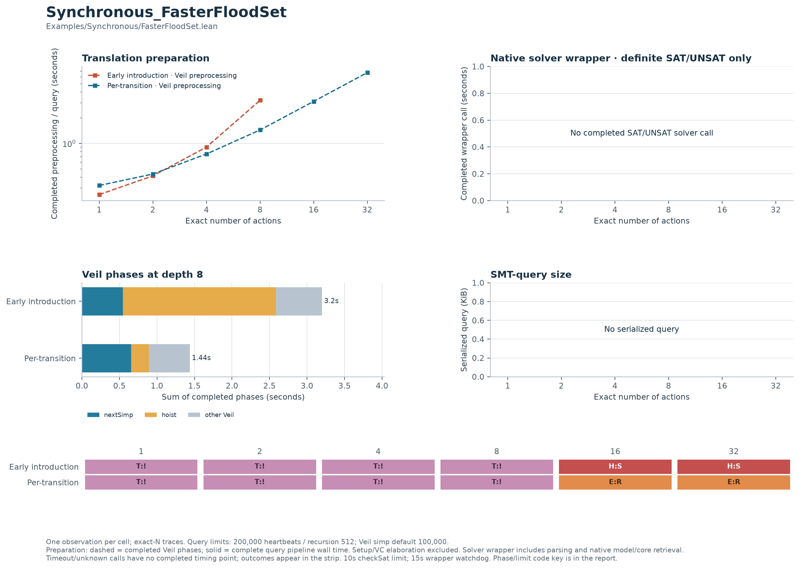
| Exact actions | Early introduction | Per-transition normalization |
|---|---|---|
| 1 | — | — |
| 2 | — | — |
| 4 | — | — |
| 8 | — | — |
| 16 | — | — |
| 32 | — | — |
A dash means no serialized query was emitted. Query hashes and exact byte counts are in queries.csv; these are the files replayed by the solver.
assert (∃ n1 n2 v1 v2, decision n1 v1 ∧ decision n2 v2 ∧ v1 ≠ v2)
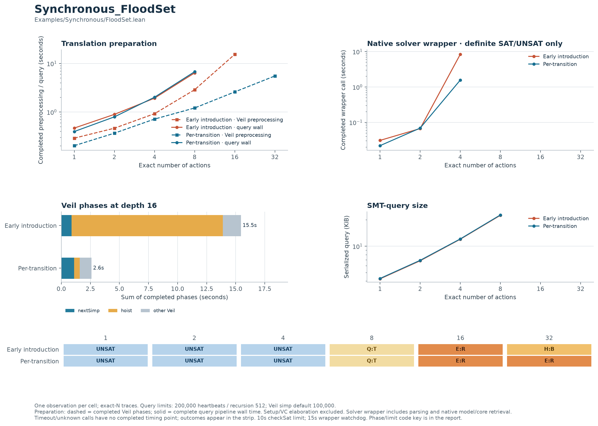
| Exact actions | Early introduction | Per-transition normalization |
|---|---|---|
| 1 | SMT-LIB 4348 bytes | SMT-LIB 4392 bytes |
| 2 | SMT-LIB 6997 bytes | SMT-LIB 7073 bytes |
| 4 | SMT-LIB 12320 bytes | SMT-LIB 12408 bytes |
| 8 | SMT-LIB 23097 bytes | SMT-LIB 23314 bytes |
| 16 | — | — |
| 32 | — | — |
A dash means no serialized query was emitted. Query hashes and exact byte counts are in queries.csv; these are the files replayed by the solver.
assert (current_plan > 0 ∧ plan_deleted current_plan true)
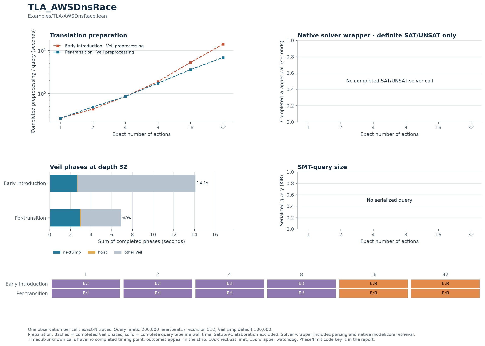
| Exact actions | Early introduction | Per-transition normalization |
|---|---|---|
| 1 | — | — |
| 2 | — | — |
| 4 | — | — |
| 8 | — | — |
| 16 | — | — |
| 32 | — | — |
A dash means no serialized query was emitted. Query hashes and exact byte counts are in queries.csv; these are the files replayed by the solver.
assert (∃ i j, i ≠ j ∧ pc i = cs ∧ pc j = cs)
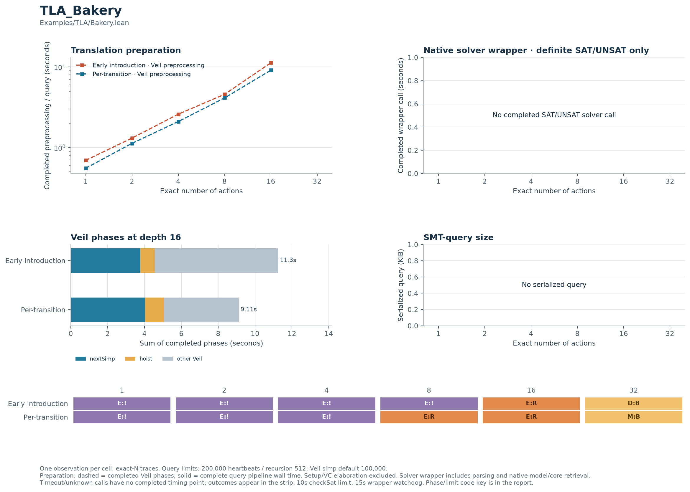
| Exact actions | Early introduction | Per-transition normalization |
|---|---|---|
| 1 | — | — |
| 2 | — | — |
| 4 | — | — |
| 8 | — | — |
| 16 | — | — |
| 32 | — | — |
A dash means no serialized query was emitted. Query hashes and exact byte counts are in queries.csv; these are the files replayed by the solver.
assert (∃ p, isCorrect p ∧ pc p = AC)
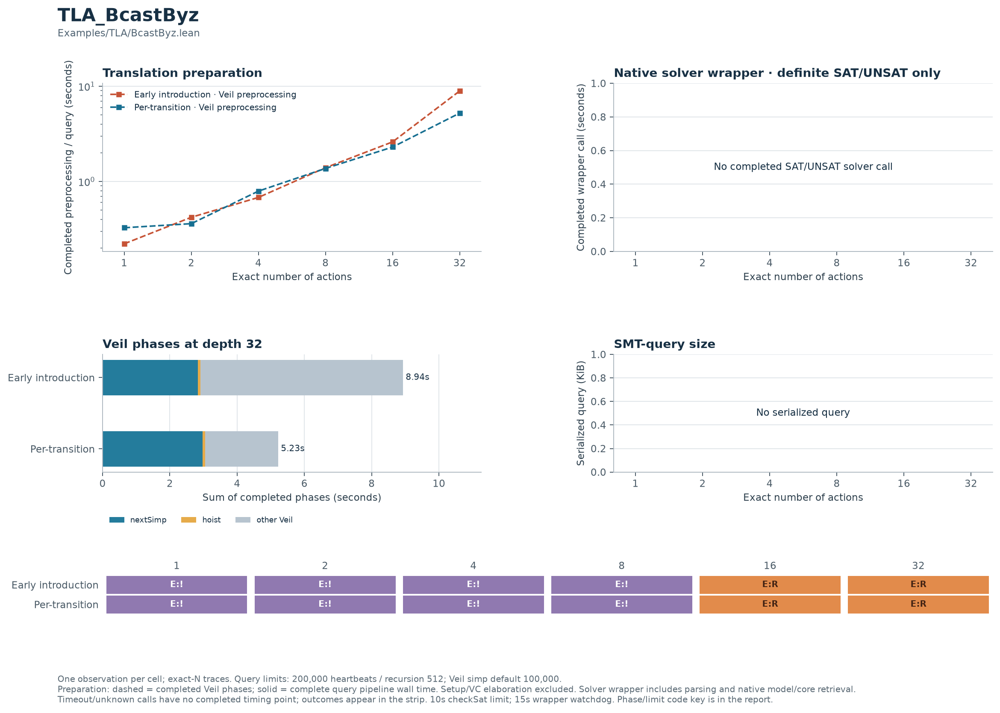
| Exact actions | Early introduction | Per-transition normalization |
|---|---|---|
| 1 | — | — |
| 2 | — | — |
| 4 | — | — |
| 8 | — | — |
| 16 | — | — |
| 32 | — | — |
A dash means no serialized query was emitted. Query hashes and exact byte counts are in queries.csv; these are the files replayed by the solver.
assert (count > BUFFER_SIZE)
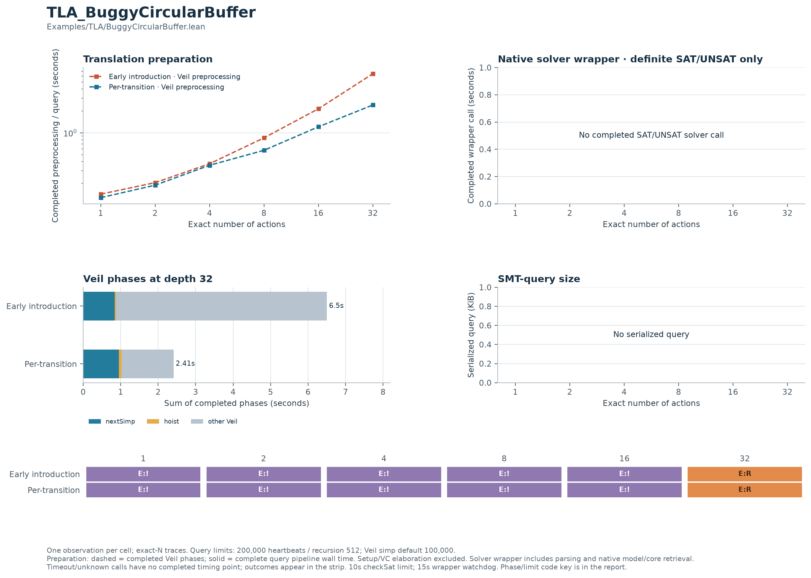
| Exact actions | Early introduction | Per-transition normalization |
|---|---|---|
| 1 | — | — |
| 2 | — | — |
| 4 | — | — |
| 8 | — | — |
| 16 | — | — |
| 32 | — | — |
A dash means no serialized query was emitted. Query hashes and exact byte counts are in queries.csv; these are the files replayed by the solver.
assert (∃ i, commitSet.count (committedMap i) > 1)
| Exact actions | Early introduction | Per-transition normalization |
|---|---|---|
| 1 | — | — |
| 2 | — | — |
| 4 | — | — |
| 8 | — | — |
| 16 | — | — |
| 32 | — | — |
A dash means no serialized query was emitted. Query hashes and exact byte counts are in queries.csv; these are the files replayed by the solver.
assert (terminationDetected ∧ ¬ terminated)
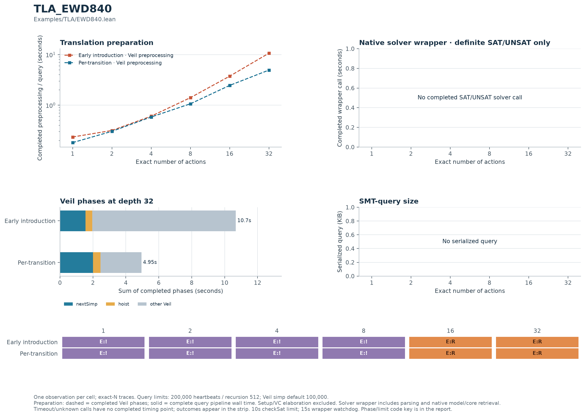
| Exact actions | Early introduction | Per-transition normalization |
|---|---|---|
| 1 | — | — |
| 2 | — | — |
| 4 | — | — |
| 8 | — | — |
| 16 | — | — |
| 32 | — | — |
A dash means no serialized query was emitted. Query hashes and exact byte counts are in queries.csv; these are the files replayed by the solver.
assert (¬ (∀ i j, i ≠ j → (((cache i).state = cE → (cache j).state = cI) ∧ ((cache i).state = cS → ((cache j).state = cI ∨ (cache j).state = cS)))))
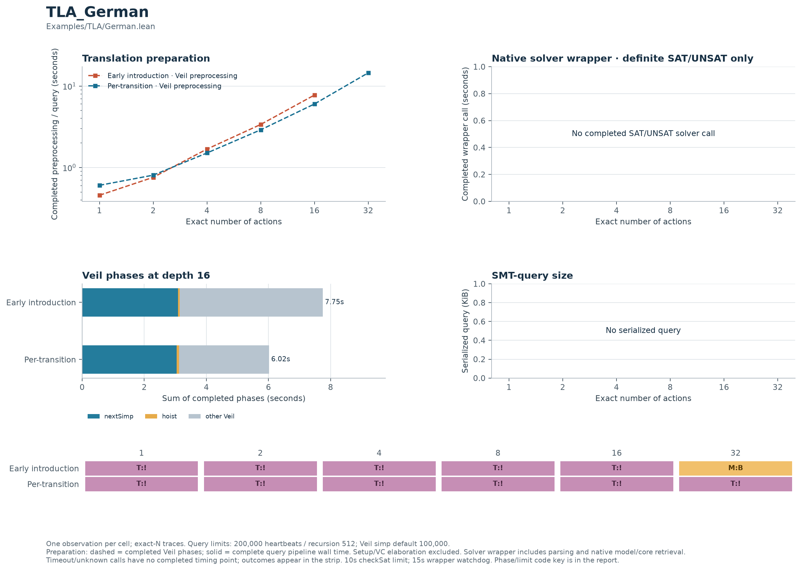
| Exact actions | Early introduction | Per-transition normalization |
|---|---|---|
| 1 | — | — |
| 2 | — | — |
| 4 | — | — |
| 8 | — | — |
| 16 | — | — |
| 32 | — | — |
A dash means no serialized query was emitted. Query hashes and exact byte counts are in queries.csv; these are the files replayed by the solver.
assert (¬ serialization)
| Exact actions | Early introduction | Per-transition normalization |
|---|---|---|
| 1 | — | — |
| 2 | — | — |
| 4 | — | — |
| 8 | — | — |
| 16 | — | — |
| 32 | — | — |
A dash means no serialized query was emitted. Query hashes and exact byte counts are in queries.csv; these are the files replayed by the solver.
assert (¬ (snapshot_isolation ∧ transaction_cleanup))
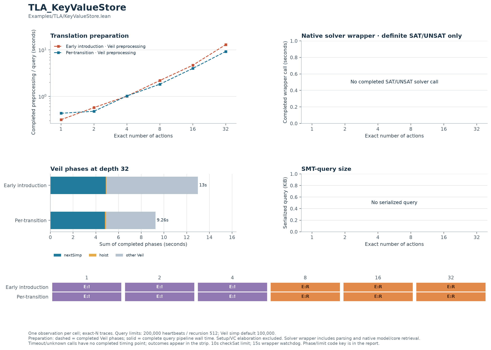
| Exact actions | Early introduction | Per-transition normalization |
|---|---|---|
| 1 | — | — |
| 2 | — | — |
| 4 | — | — |
| 8 | — | — |
| 16 | — | — |
| 32 | — | — |
A dash means no serialized query was emitted. Query hashes and exact byte counts are in queries.csv; these are the files replayed by the solver.
assert (∃ v1 v2 s, Chosen v1 s ∧ Chosen v2 s ∧ v1 ≠ v2)
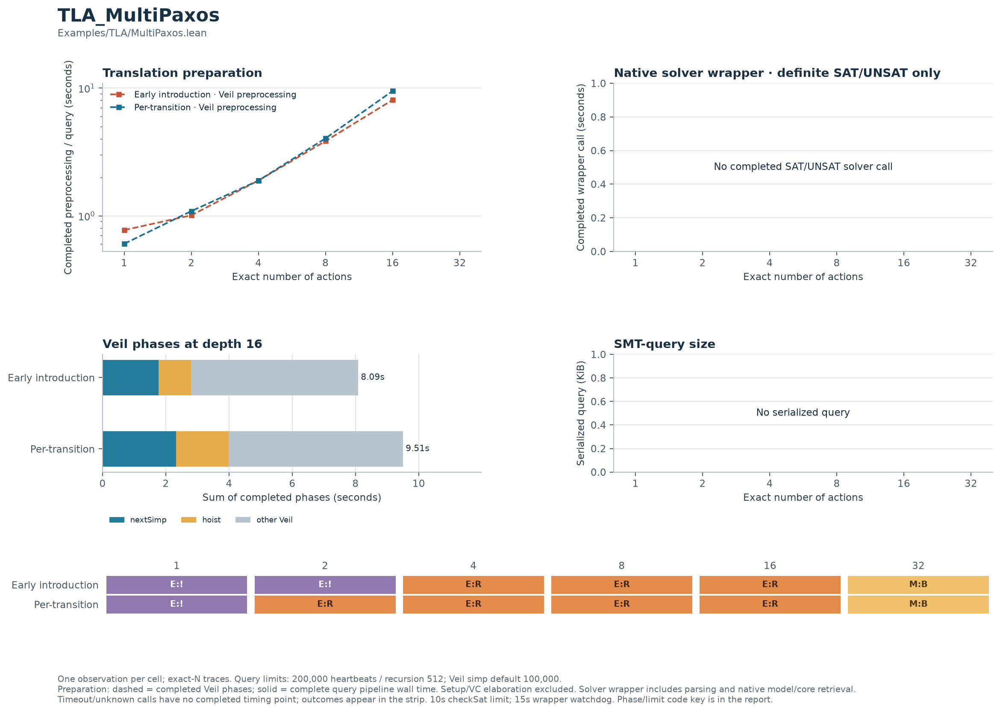
| Exact actions | Early introduction | Per-transition normalization |
|---|---|---|
| 1 | — | — |
| 2 | — | — |
| 4 | — | — |
| 8 | — | — |
| 16 | — | — |
| 32 | — | — |
A dash means no serialized query was emitted. Query hashes and exact byte counts are in queries.csv; these are the files replayed by the solver.
assert (∃ i j, i ≠ j ∧ pc i = cs ∧ pc j = cs)
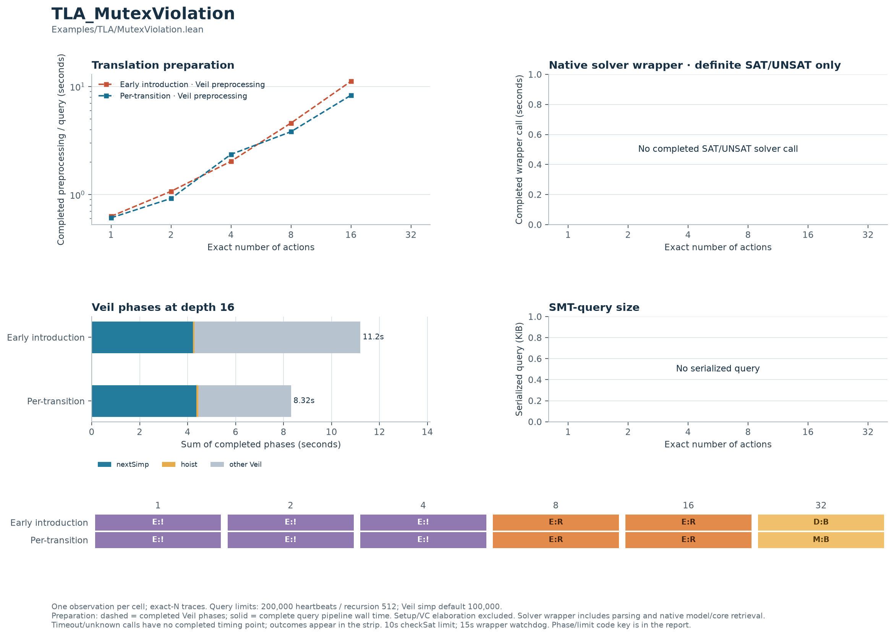
| Exact actions | Early introduction | Per-transition normalization |
|---|---|---|
| 1 | — | — |
| 2 | — | — |
| 4 | — | — |
| 8 | — | — |
| 16 | — | — |
| 32 | — | — |
A dash means no serialized query was emitted. Query hashes and exact byte counts are in queries.csv; these are the files replayed by the solver.
assert (¬ Linearizability)
| Exact actions | Early introduction | Per-transition normalization |
|---|---|---|
| 1 | — | — |
| 2 | — | — |
| 4 | — | — |
| 8 | — | — |
| 16 | — | — |
| 32 | — | — |
A dash means no serialized query was emitted. Query hashes and exact byte counts are in queries.csv; these are the files replayed by the solver.
assert (∃ v1 v2, Chosen v1 ∧ Chosen v2 ∧ v1 ≠ v2)
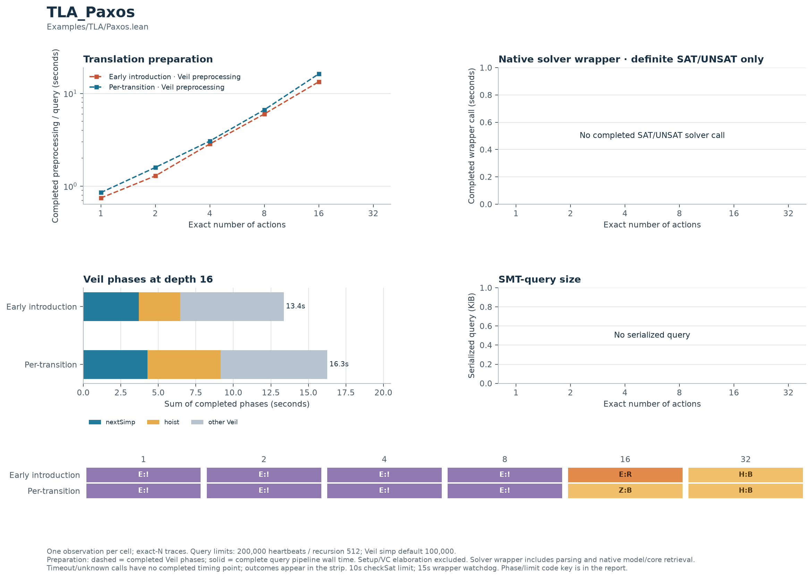
| Exact actions | Early introduction | Per-transition normalization |
|---|---|---|
| 1 | — | — |
| 2 | — | — |
| 4 | — | — |
| 8 | — | — |
| 16 | — | — |
| 32 | — | — |
A dash means no serialized query was emitted. Query hashes and exact byte counts are in queries.csv; these are the files replayed by the solver.
assert (∃ i j, i ≠ j ∧ lockcs i ∧ lockcs j)
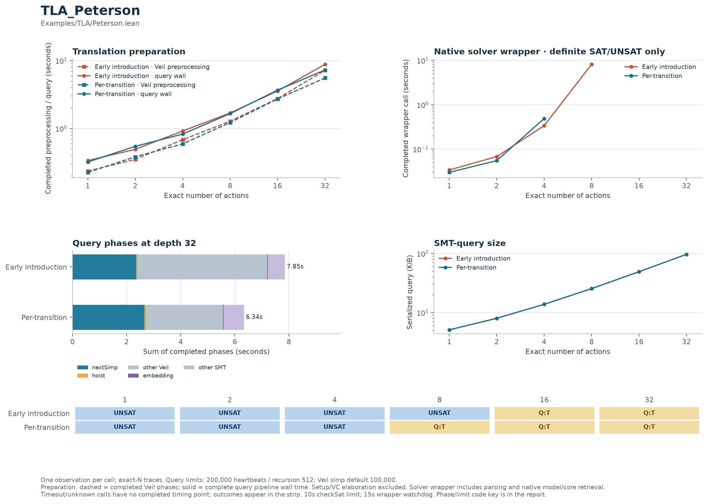
| Exact actions | Early introduction | Per-transition normalization |
|---|---|---|
| 1 | SMT-LIB 5200 bytes | SMT-LIB 5220 bytes |
| 2 | SMT-LIB 8173 bytes | SMT-LIB 8196 bytes |
| 4 | SMT-LIB 14119 bytes | SMT-LIB 14148 bytes |
| 8 | SMT-LIB 26011 bytes | SMT-LIB 26052 bytes |
| 16 | SMT-LIB 50306 bytes | SMT-LIB 50371 bytes |
| 32 | SMT-LIB 99090 bytes | SMT-LIB 99203 bytes |
A dash means no serialized query was emitted. Query hashes and exact byte counts are in queries.csv; these are the files replayed by the solver.
assert (∃ i j, i ≠ j ∧ currentTerm i = currentTerm j ∧ pcState i Leader ∧ pcState j Leader)
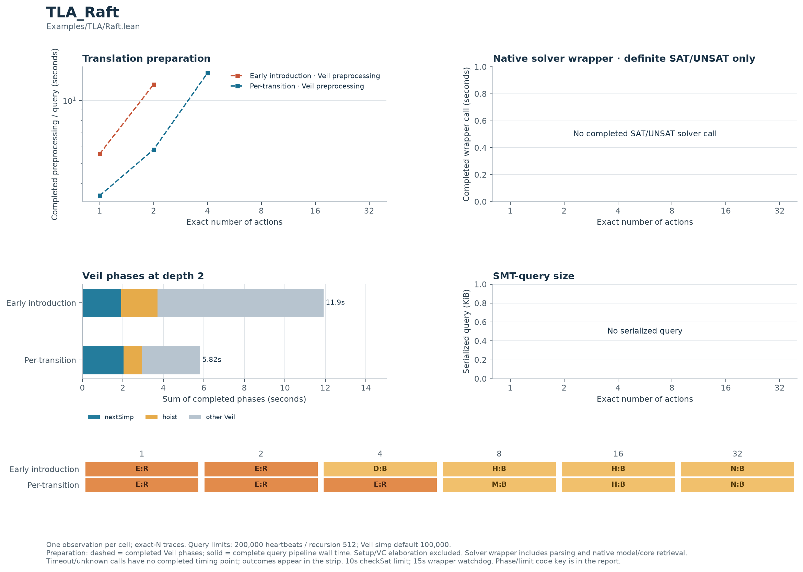
| Exact actions | Early introduction | Per-transition normalization |
|---|---|---|
| 1 | — | — |
| 2 | — | — |
| 4 | — | — |
| 8 | — | — |
| 16 | — | — |
| 32 | — | — |
A dash means no serialized query was emitted. Query hashes and exact byte counts are in queries.csv; these are the files replayed by the solver.
assert (∃ r g1 g2, guestTset.contains g1 (registered r) ∧ guestTset.contains g2 (registered r) ∧ g1 ≠ g2)
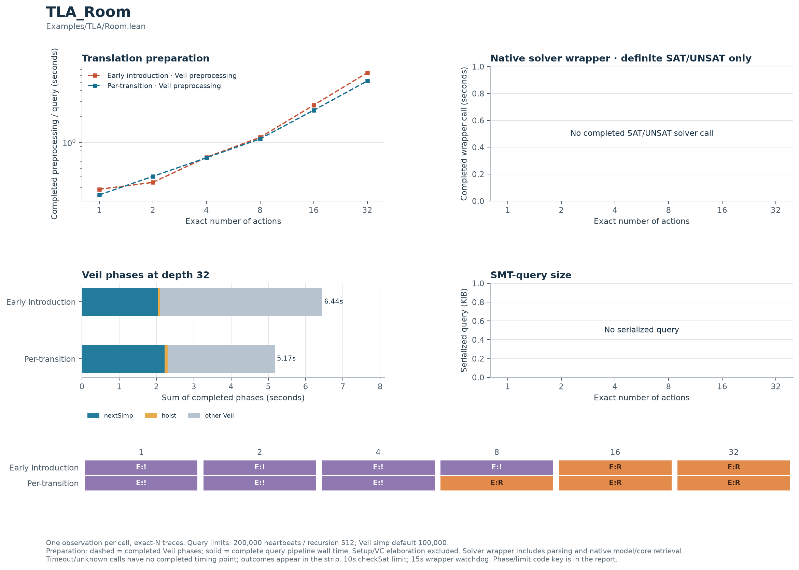
| Exact actions | Early introduction | Per-transition normalization |
|---|---|---|
| 1 | — | — |
| 2 | — | — |
| 4 | — | — |
| 8 | — | — |
| 16 | — | — |
| 32 | — | — |
A dash means no serialized query was emitted. Query hashes and exact byte counts are in queries.csv; these are the files replayed by the solver.
assert (¬ (∀ c1 c2 : client, c1 ≠ c2 → resSet.isEmpty (resSet.intersection (alloc c1) (alloc c2))))
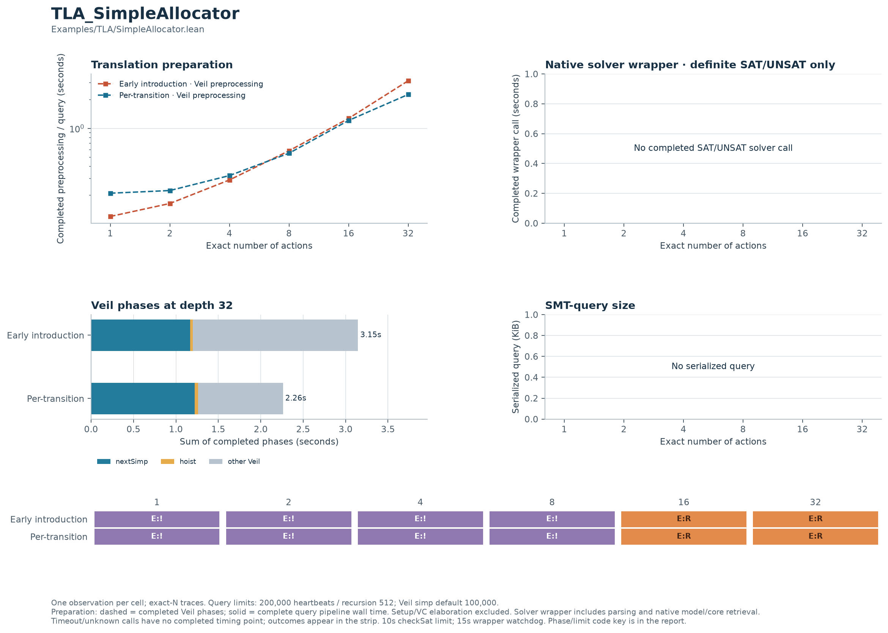
| Exact actions | Early introduction | Per-transition normalization |
|---|---|---|
| 1 | — | — |
| 2 | — | — |
| 4 | — | — |
| 8 | — | — |
| 16 | — | — |
| 32 | — | — |
A dash means no serialized query was emitted. Query hashes and exact byte counts are in queries.csv; these are the files replayed by the solver.
assert (at_light = false)
| Exact actions | Early introduction | Per-transition normalization |
|---|---|---|
| 1 | SMT-LIB 2974 bytes | SMT-LIB 2982 bytes |
| 2 | SMT-LIB 4272 bytes | SMT-LIB 4283 bytes |
| 4 | SMT-LIB 6868 bytes | SMT-LIB 6885 bytes |
| 8 | SMT-LIB 12060 bytes | SMT-LIB 12089 bytes |
| 16 | SMT-LIB 22674 bytes | SMT-LIB 22727 bytes |
| 32 | SMT-LIB 44002 bytes | SMT-LIB 44103 bytes |
A dash means no serialized query was emitted. Query hashes and exact byte counts are in queries.csv; these are the files replayed by the solver.
assert (∃ rm1 rm2, (rmState rm1 == committed) ∧ (rmState rm2 == aborted))
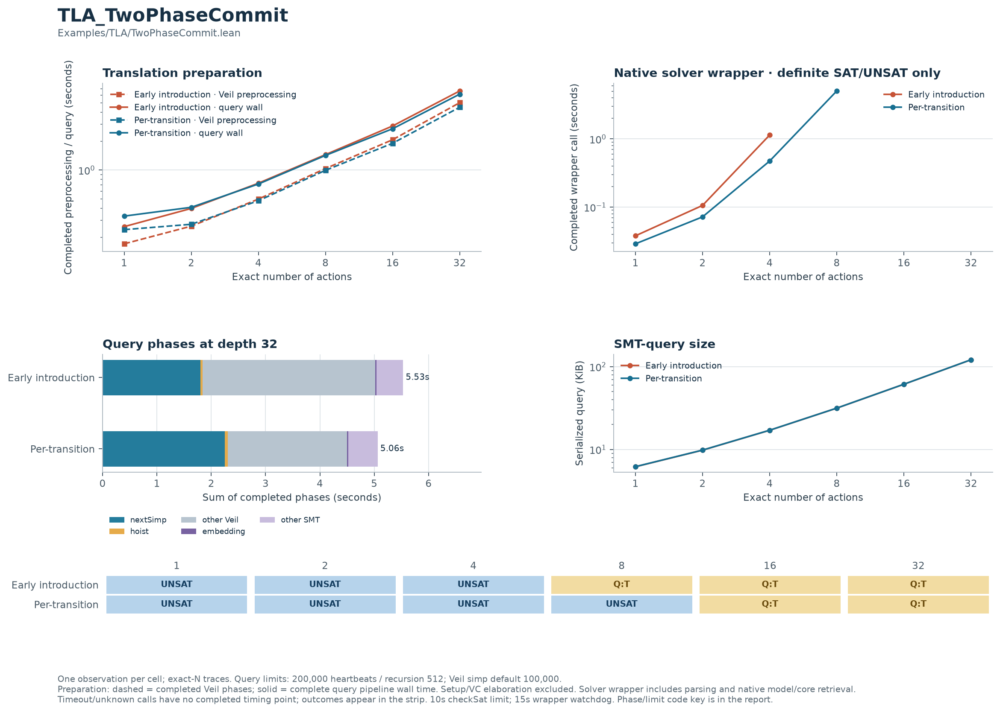
| Exact actions | Early introduction | Per-transition normalization |
|---|---|---|
| 1 | SMT-LIB 6334 bytes | SMT-LIB 6351 bytes |
| 2 | SMT-LIB 10045 bytes | SMT-LIB 10065 bytes |
| 4 | SMT-LIB 17467 bytes | SMT-LIB 17493 bytes |
| 8 | SMT-LIB 32311 bytes | SMT-LIB 32349 bytes |
| 16 | SMT-LIB 62773 bytes | SMT-LIB 62835 bytes |
| 32 | SMT-LIB 124021 bytes | SMT-LIB 124131 bytes |
A dash means no serialized query was emitted. Query hashes and exact byte counts are in queries.csv; these are the files replayed by the solver.
assert (¬ (∀ n1 n2 v1 v2, decision n1 v1 ∧ decision n2 v2 → v1 = v2))
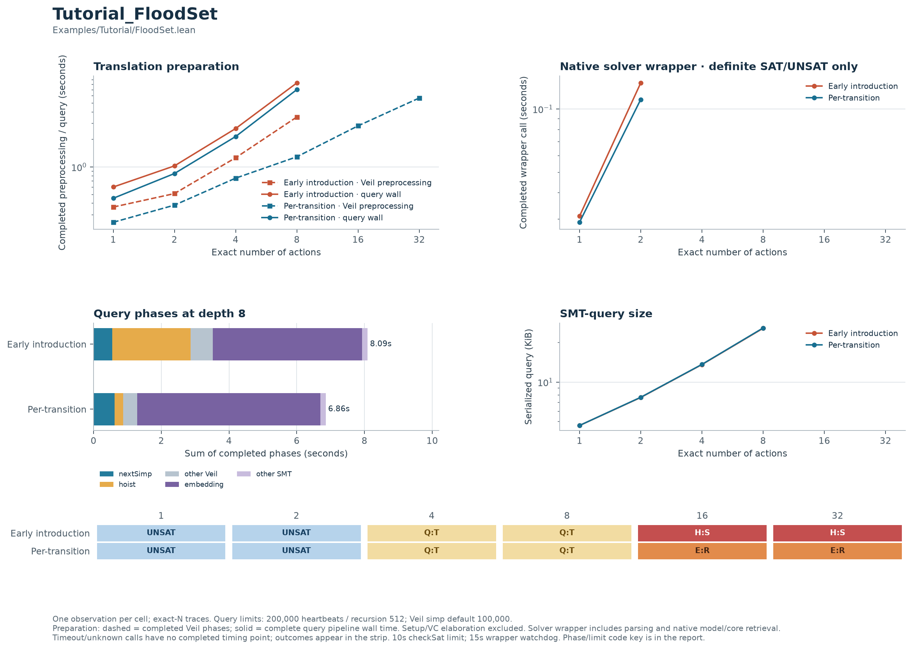
| Exact actions | Early introduction | Per-transition normalization |
|---|---|---|
| 1 | SMT-LIB 4791 bytes | SMT-LIB 4795 bytes |
| 2 | SMT-LIB 7830 bytes | SMT-LIB 7854 bytes |
| 4 | SMT-LIB 13931 bytes | SMT-LIB 13972 bytes |
| 8 | SMT-LIB 26307 bytes | SMT-LIB 26448 bytes |
| 16 | — | — |
| 32 | — | — |
A dash means no serialized query was emitted. Query hashes and exact byte counts are in queries.csv; these are the files replayed by the solver.
assert (∃ n1 n2, n1 ≠ n2 ∧ leader n1 ∧ leader n2)
| Exact actions | Early introduction | Per-transition normalization |
|---|---|---|
| 1 | SMT-LIB 3644 bytes | SMT-LIB 3664 bytes |
| 2 | SMT-LIB 5713 bytes | SMT-LIB 5736 bytes |
| 4 | SMT-LIB 9851 bytes | SMT-LIB 9880 bytes |
| 8 | SMT-LIB 18127 bytes | SMT-LIB 18168 bytes |
| 16 | SMT-LIB 35064 bytes | SMT-LIB 35129 bytes |
| 32 | SMT-LIB 69064 bytes | SMT-LIB 69177 bytes |
A dash means no serialized query was emitted. Query hashes and exact byte counts are in queries.csv; these are the files replayed by the solver.
assert (leader.length > 1)
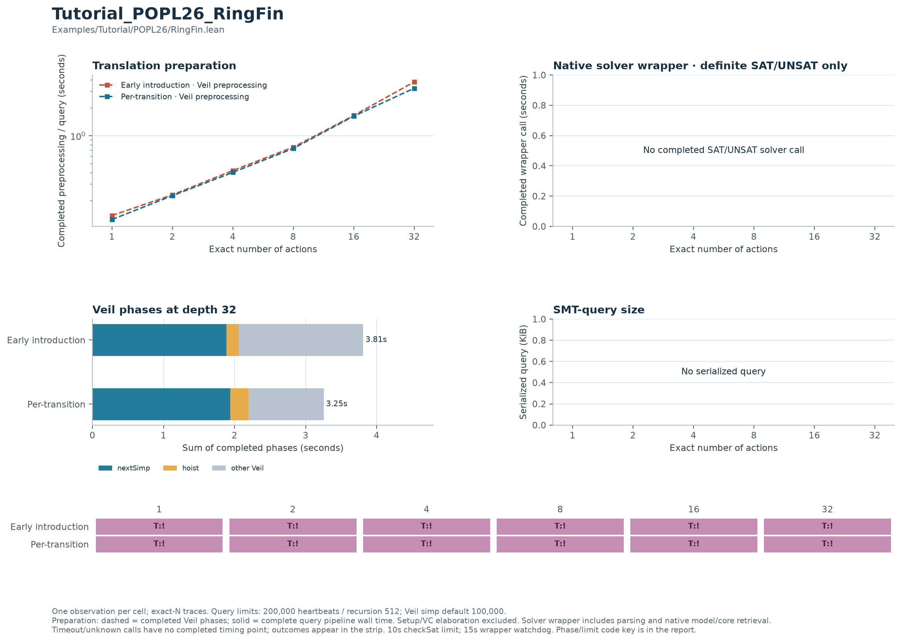
| Exact actions | Early introduction | Per-transition normalization |
|---|---|---|
| 1 | — | — |
| 2 | — | — |
| 4 | — | — |
| 8 | — | — |
| 16 | — | — |
| 32 | — | — |
A dash means no serialized query was emitted. Query hashes and exact byte counts are in queries.csv; these are the files replayed by the solver.
assert (leader.length > 1)
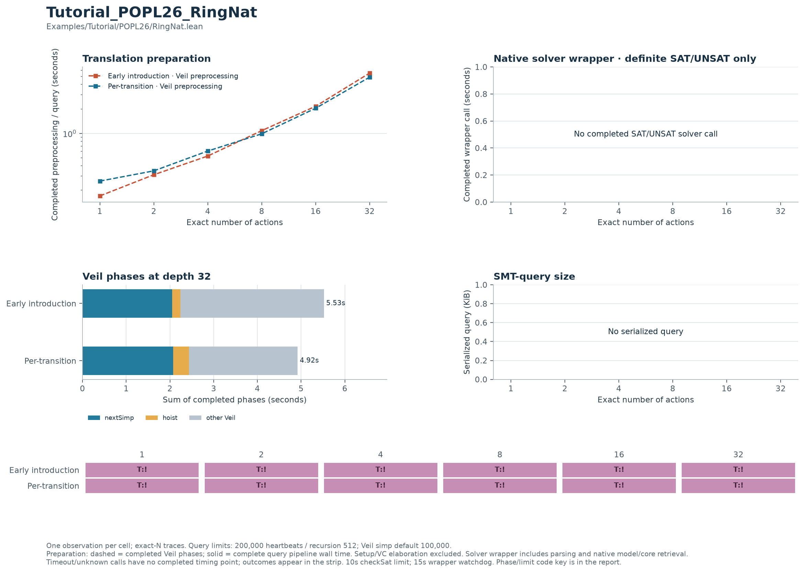
| Exact actions | Early introduction | Per-transition normalization |
|---|---|---|
| 1 | — | — |
| 2 | — | — |
| 4 | — | — |
| 8 | — | — |
| 16 | — | — |
| 32 | — | — |
A dash means no serialized query was emitted. Query hashes and exact byte counts are in queries.csv; these are the files replayed by the solver.
assert (∃ l1 l2, leader l1 ∧ leader l2 ∧ l1 ≠ l2)
| Exact actions | Early introduction | Per-transition normalization |
|---|---|---|
| 1 | SMT-LIB 3668 bytes | SMT-LIB 3688 bytes |
| 2 | SMT-LIB 5761 bytes | SMT-LIB 5784 bytes |
| 4 | SMT-LIB 9947 bytes | SMT-LIB 9976 bytes |
| 8 | SMT-LIB 18319 bytes | SMT-LIB 18360 bytes |
| 16 | SMT-LIB 35448 bytes | SMT-LIB 35513 bytes |
| 32 | SMT-LIB 69832 bytes | SMT-LIB 69945 bytes |
A dash means no serialized query was emitted. Query hashes and exact byte counts are in queries.csv; these are the files replayed by the solver.
AMD EPYC 9645 96-Core Processor; 8 logical CPUs visible. Lean (version 4.32.0, x86_64-unknown-linux-gnu, commit 8c9756b28d64dab099da31a4c09229a9e6a2ef35, Release). Python 3.13.5. Exact dependency revisions, platform, and suite-log hash.
The implemented change is per-transition normalization after early data introduction. It preserves the trace constraints by projection and proof-producing simplification, with fresh witnesses and shared states. Downstream backend repairs remain separate work. The original LamportMutexV1 reproducer from issue #123 is not included in this corpus, so these runs do not establish that that exact reproducer is fixed.
Fresh comparison of early introduction and per-transition normalization ===================================================================== 49 model-bearing example files, one documented selected assertion per file, exact depths 1, 2, 4, 8, 16, 32, two variants: 588 predeclared cells. The manifest is identical to the prior comprehensive sweep. The only excluded source is the support theory Examples/StellarConsensus/SCPTheory.lean. Overlapping examples are separate source files, not 49 independent protocols. Symbolic domains remain abstract/unbounded; original concrete #model_check instantiations are not used. Both variants are rerun on the same frozen compiled worktree. Early introduction replays the pipeline committed in 543817e6. Local normalization calls the new production helpers and has the same proof-header fallback. No previous timing is copied into this comparison. Sources are cut at the manifest's first genuine spec-generation command, with the previous nested-comment/namespace fixes. The helper is scoped so its open namespaces cannot pollute model definitions. Query limits are maxHeartbeats=200000 and maxRecDepth=512, with the unchanged 100000-step default for each Veil simp invocation. Native cvc5 1.3.2 is loaded during both extraction and replay. The trusted pipeline retains Veil.withBackwardsCompatibility, withoutRecover, embedBool=false, finite-model- find=true, logic ALL and the ordinary Veil solver options. Model setup retains its source options; query options are standardized. Setup and each query have 60-second process-group watchdogs; native replay has a 10-second checkSat cap and a separate 15-second wrapper watchdog. One model setup is shared by the twelve query commands in a batch. Each command has an independent Lean command heartbeat allowance, and Elab.async=false keeps elaboration sequential. Variant order alternates by model and depth. Completed cells are checkpointed; a timeout restarts only unstarted cells. All translation runs finish before sequential native solver replay. No competing builds, Lean probes, solver jobs or graph rendering are run during the recorded sweep. One observation per cell measures feasibility and approximate cost, not a stable speedup distribution or statistical confidence interval. Query time is the sum of completed stage timers, including local splitting, naming/hint audits, context destruction and backend preparation. It excludes startup, model setup, trace VC elaboration, event/log IO and solver execution. Setup and VC elaboration are recorded separately. Shared batch setup must not be summed once per cell. Each simpGoal invocation simplifies its hypothesis formulas individually. Fresh inner and outer simp calls reset their step counters. The aggregate permitted simp steps therefore differ even though the per-call setting is unchanged. No per-transition heartbeat reset is performed: the whole query retains the same 200000-command-heartbeat budget. Raw allocation heartbeat deltas are also recorded for each phase, including split/transport/destruction and the SMT pipeline, so success at a deeper depth is not the only evidence of reduced work. These counters are raw allocations, not the option's scaled heartbeat units. Queries are deliberately extracted from declarations that end with a distinct measurement error. No theorem is admitted or claimed by the measurement harness. Native SAT/UNSAT is determined by replaying the emitted script. Solver time is Smt.solve time: native setup, parsing, checkSat and native model values/domain or unsat-core retrieval. It excludes Lean proof/model/trace reconstruction. That plumbing is covered by the separate production regression suite. Failure and timeout durations never appear as completed timings. PRE denotes exact preprocessing closure and is reported separately from solver UNSAT. A serialized query that cvc5 rejects is a solver error, not a successful solver result. Every model receives a graph, including models without successful cells. A largest successful sampled exact depth is not a monotone depth bound; missing intermediate depths and different SAT/UNSAT answers remain visible. Full-pipeline wall-time supplement Pipeline events also record the elapsed interval from pipeline entry through query serialization. pipeline-work.csv and the dedicated plot use that full interval, including dispatch/context/event overhead between phase timers. Per-model solid query curves use this wall interval; their dashed preprocessing curves remain completed Veil-stage sums. The phase breakdowns and original matched-timings.csv retain stage sums for attribution. The exclusive VC+pipeline+solver figure adds query/VC elaboration and a definite native call; it still excludes shared setup and Lean proof/model reconstruction.
Per-transition symbolic BMC normalization
=======================================
Baseline
Commit 543817e6 commits conservative early introduction, its regression
tests, and the previous comprehensive benchmark/report. The new implementation
is a separate worktree diff against that commit. No dependency is patched.
Logical shape
Early introduction leaves one target:
|- not (A(th) and Init(th,s0) and T1(s0,s1) and ... and Bad(sd))
Local normalization constructs one shared context:
hA:A(th), hI:Init(th,s0),
w1:W1, h1:M1(w1,s0,s1), ..., wd:Wd, hd:Md(wd,s[d-1],sd),
hB:Bad(sd) |- False
when Ti is exactly equivalent to exists wi, Mi. Action alternatives remain
inside Mi. Both encode the existence of the same complete trace, with the same
middle states. There is still one joint solver call.
Transformation
After introducing the data/type/Type-valued instance prefix, recognize the
visible goal Not(trace). Proof-valued headers use the committed whole-target
path, including normalization of their domains. There is no expensive trial
and fallback, and no catch that turns resource exhaustion into success.
For the ordinary trace goal, introduce its negated conjunction to prove
False. Flatten only the outer conjunction, using And.left/And.right proof
projections. Assert all leaves in one batch and clear the original composite
hypothesis. Do not unfold a transition during this split, enter a disjunction,
duplicate a shared state, or enumerate action sequences.
Build one simplifier context per phase and normalize each hypothesis through
Lean's simpGoal/dsimpGoal APIs. The first two phases use precisely the existing
nextSimp and guarded existential rules. The latter's Nonempty side conditions
and dependent-quantifier checks remain unchanged. No one-way abstraction
theorem is substituted for the exact transition equations.
Reuse veil_destruct to eliminate state/theory structures, leading existential
witnesses and newly exposed conjunctions. Witnesses are independent fresh
locals; dependent types retain their ordering. Apply dsimp/smtSimp/dsimp to the
resulting hypotheses explicitly. Simplifying only the target False would
leave those constraints unprocessed.
Hint coverage is checked before destruction and before the backend. All local
user names become unique without changing FVarIds/types. Resolve backend
selections to FVarIds and check every visible, non-instance proposition is
present. Unsupported filtered constraints cause an explicit error. The same
backend policy omits implementation details and proof-valued implementation
instances. Each normalization phase enumerates the current live FVarIds, so
context transport cannot leave a cached array of stale matrix identities.
Invoke veil_smt once with the ordinary options, compatibility wrapper,
untrusted Nonempty inference and model/proof plumbing. Exact simplifier
closure is a preprocessing UNSAT result. The optimization is about producing
the complete query, not checking transitions separately.
Semantic contract
Projecting every leaf of a conjunction and retaining all of them is reversible
by conjunction introduction. Existing simp rewrites carry equivalence/equality
proofs. Eliminating an existential introduces an arbitrary witness with its
entire matrix. Record elimination preserves the data and dependent constraints.
These steps preserve the satisfiability of the joint trace and the shared
state/action variables. They do not add a finite domain or default choices.
Validation
lake build VeilTest passed 1227 jobs. TraceLocalNormalization adds kernel
checks for empty inactive witnesses, universal dependence, dependent witness
types and shadowed contradictory hypotheses; trace tests check distinct
function choices, action disjunctions, shared middle states, zero actions,
false assertions and false proof headers. The manual untrusted shared-state
theorem and shadowed-hypothesis theorem have no sorryAx. Existing trusted and
untrusted higher-order-choice checks, proof-header regressions, dependent
arguments, rigid bindings, model decoding and depth-32 checks also pass.
See full-suite.log and environment.json for the exact result/hash.
Limits
This is not a proof that the existing SMT embedding/translator is universally
correct. The benchmark checks emitted scripts with native cvc5 and compares
paired outcomes. Logical-query auditing is separate and conservative.
The existing context destructor and whole-context SMT embedding remain; their
costs and limitations can dominate once global hoisting is removed.
Pipeline parity audit ===================== Baseline: committed early-introduction body in Core.lean at 543817e6. The runner uses that body explicitly: introduce data; nextSimp; guarded hoisting; intros; destruct; dsimp; smtSimp; dsimp. In trusted mode the production Nonempty hooks are no-ops. The benchmark's intro-data helper matches the committed definition. Local: early data introduction; __veil_bmc_if_local selects the same visible-Not form as production. Local steps are __veil_bmc_split_trace, __veil_bmc_hyps with nextSimp, __veil_bmc_hyps with guarded hoisting, __veil_bmc_check_hints, veil_destruct, __veil_bmc_hyps dsimp/smtSimp/dsimp, __veil_bmc_check_hints. The simp configuration includes instances=true and failIfUnchanged=false, matching veil_simp's ordinary wrapper. Internal helpers themselves apply the production backwards-compatibility options. Unsupported proof-header shapes use the early pipeline. No pipeline exceptions are caught as a fallback. The extraction wrapper replaces only the final solver invocation with the same trusted SMT preprocessing: getPropsInContext, cleanup with all hint dependencies, pushHintsToCtx, intros, negateGoal, normalize, embeddingWithConfig(embedBool=false), genUniqueFVarNames, prepareSmtQuery and cmdsAsQuery with logic ALL/checkSat. Veil.withBackwardsCompatibility and withoutRecover enclose this path. It writes the exact text that is replayed by native Smt.solve; hashes connect both stages. The paired scripts may have different assertion grouping and different fresh symbol names. Splitting into hypotheses can affect solver heuristics even for an equivalent formula. Native solver time/outcomes are measured separately; logical normalization used for the audit never changes a solver input. The full suite uses the actual veil_bmc command without an override. The bench uses the same internal helpers but wraps stages to measure costs. Benchmark sources, snapshots, core source/olean hashes and native plugin hashes are kept.
Paired-query logical audit ========================== The local path can emit several assertions where early introduction emitted one conjunction, and embedding/elimination may choose different fresh names. The old byte/command comparator is therefore insufficient. compare_local_queries.py parses the emitted texts and conjoins ALL assertions. It applies classical Boolean identities, double-negation/implication expansion, quantifier duality under negation, scoped bound-variable renaming, associative/ commutative/idempotent and/or, symmetric equality and Boolean-literal equality. For SMT's inhabited sorts, positive existentials outside universal scopes may be represented by fresh global constants for satisfiability checking. Quantifiers inside non-monotone positions such as equality or ite remain scoped. It never moves an existential through a universal. Unused free declarations are ignored; no assertion is removed except by the explicit identities. A graph-refinement search proposes a bijection between free declarations of the same signature. Named trace states, theory fields, action tags and trace arguments are anchored. Every candidate is then checked independently: applying the entire bijection must produce exactly the same normalized asserted formula and metadata. The JSON retains the successful renaming for inspection. Different forms or an unresolved mapping are inconclusive, not counterexamples. Boundary checks cover missing conjuncts, contradictions, bound capture, shared-state polarity, forall/exists dependence and existentials inside Boolean equality. This is a conservative executable audit, not a Lean proof or an SMT type checker. The same underlying SMT translation defects can affect both variants. Native acceptance and actual solver answers are recorded separately, and matches on invalid scripts must not be described as successfully translated solver problems. No normalization from this audit changes the scripts sent to cvc5. The production transform's exactness argument and kernel-checked regression evidence are in IMPLEMENTATION.txt and the full suite log. Final match counts and any unresolved differences are recorded in the logical-query-comparison CSV and executive summary. The audit's invented bound-variable/witness namespace is rejected if it occurs among input declarations, preventing a user symbol from being confused with an internal marker. Remaining unrecognized SMT commands cause an explicit inconclusive result; there is no optimistic fallback based on matching counts. Completed audit 132/132 paired emitted formulas matched. Native cvc5 accepted 122 of those pairs, and all 122 matched. The remaining ten matched pairs contain existing solver-rejected scripts; their match is not evidence of successful translation. All 83 pairs with two definite primary solver answers agree. The two new Blockchain queries lack a same-budget emitted early-introduction counterpart. See query-comparison/logical-query-comparison.csv and its JSON renamings.
Separate simplifier-work experiment
==================================
After the primary 588-cell extraction/replay finished, a separate runner enabled
trace.Meta.Tactic.simp.numSteps for the normalization phases. It recursively
collects the counters of completed inner AND outer SimpM.run calls, resets trace
state between phases, and stops immediately after transition unfolding and
hoisting. It does not destruct contexts, embed, serialize or call the solver.
The initial Ivy Ring depth-1 smoke check passed before the full diagnostic.
The full diagnostic covers Blockchain, Tutorial FloodSet and Ivy Ring at the
same six depths for both variants (36 cells). Thirty-one complete both phases;
five early-introduction cells fail in hoisting. Local normalization completes
both measured phases in all eighteen local cells. This does not imply complete
translation: the primary Blockchain depth-32 query fails in destruction, and
FloodSet at depths 16/32 fails in embedding.
Completed hoisting-phase counter sums:
depth early local
Ivy Blockchain 1 5,142 2,540
2 11,261 5,077
4 32,139 10,151
8 fail 20,299
16 fail 40,595
32 fail 81,187
Tutorial FloodSet 1 826 327
2 1,734 626
4 5,000 1,224
8 20,132 2,420
16 fail 4,812
32 fail 9,596
This is direct evidence of reduced measured hoisting work on matched complete
phases, followed by approximately linear growth in the local formulation. It is
not merely evidence that restarting a per-call counter permits more total work.
Blockchain depth 4 uses about 3.17x fewer counted hoisting steps, and FloodSet
depth 8 about 8.32x fewer. Failed phases are omitted rather than assigning their
limit as a completed count.
There is no blanket reduction in all simplifier work. At depth 32, Blockchain's
nextSimp counter increases from 45,819 to 50,335; FloodSet's from 19,801 to 25,049.
Separate hypotheses repeat some unfolding/traversal. Ivy Ring has no applicable
higher-order hoisting in these traces: the global guard reports one outer simp
step, while the local path reports one per hypothesis (35 at depth 32). Guard
traversal/type inference, proof construction and context transport are not all
represented by numSteps. The primary allocation counters and complete-pipeline
wall times are therefore retained as independent cost measurements.
Counters from failed/abandoned runs may not be emitted. These are sums of the
completed-run counters available from Lean's trace API, not a count of all
machine operations or a complexity proof. Tracing changes allocation and timing;
none of the diagnostic timings is pooled with the primary benchmark. A fresh
simp counter is permitted for each hypothesis, but the runner does not reset the
whole-query command heartbeat allowance per transition.
The graph and raw tables are step-profile/simp-work.png, simp-work.svg,
simp-work.csv and matched-simp-work.csv. All generated Lean sources, per-phase
events and failure messages are preserved in step-profile/results.
Separate native solver diagnostics ================================== The primary 588-cell comparison is unchanged. After it finished, twelve model/depth cases were selected deterministically: two newly emitted queries, four pairs with a definite-result change, and six pairs whose observed solver times differed by at least 5x with the slower call at least 500 ms. Each selected emitted query was replayed three times in a fresh native solver; pair order alternates between repeats. These 66 calls use the same emitted query hashes and 10-second checkSat / 15-second wrapper limits. No other Lean, graph-rendering or solver jobs ran concurrently. This is a targeted diagnostic, not a repeated sample of the whole corpus or a confidence interval. Repeated results (three calls per row): Model / depth / variant | outcomes | median definite-call time (seconds) Ivy_Blockchain / 8 / local | UNSAT 3/3 | 0.480 Ivy_Blockchain / 16 / local | UNSAT 3/3 | 0.791 Ivy_MultiSigAll / 4 / early | TIMEOUT 1/3, UNSAT 2/3 | 9.435 Ivy_MultiSigAll / 4 / local | UNSAT 3/3 | 0.595 Ivy_MultiSigMajority / 2 / early | UNSAT 3/3 | 0.524 Ivy_MultiSigMajority / 2 / local | UNSAT 3/3 | 0.074 Ivy_MultiSigMajority / 4 / early | UNSAT 3/3 | 7.345 Ivy_MultiSigMajority / 4 / local | UNSAT 3/3 | 0.384 Ivy_TwoPhaseCommit / 8 / early | UNSAT 3/3 | 4.819 Ivy_TwoPhaseCommit / 8 / local | TIMEOUT 2/3, UNSAT 1/3 | 9.747 Simulate_CheckpointLeaseFailover / 16 / early | SAT 3/3 | 8.641 Simulate_CheckpointLeaseFailover / 16 / local | TIMEOUT 3/3 | — Synchronous_FloodSet / 4 / early | UNSAT 3/3 | 9.577 Synchronous_FloodSet / 4 / local | UNSAT 3/3 | 1.552 TLA_Peterson / 8 / early | UNSAT 3/3 | 7.230 TLA_Peterson / 8 / local | TIMEOUT 3/3 | — TLA_Traffic / 16 / early | SAT 3/3 | 0.057 TLA_Traffic / 16 / local | SAT 3/3 | 0.846 TLA_Traffic / 32 / early | SAT 3/3 | 0.130 TLA_Traffic / 32 / local | SAT 3/3 | 6.704 TLA_TwoPhaseCommit / 8 / early | TIMEOUT 3/3 | — TLA_TwoPhaseCommit / 8 / local | UNSAT 3/3 | 5.193 Medians include only definite calls, never timeout durations; mixed outcomes must be read together with their success counts. The primary measurements are not included in these three-repeat medians. Near-threshold results fluctuate: Ivy TwoPhaseCommit local finishes in one repeat at 9.747 s, and times out in two. The repeated Traffic slowdown shows that even preserved definite outcomes can cost much more solver time. There are no contradictory definite answers. Separate 30-second checks of the three primary regressions: Model / variant | result | native seconds Ivy_TwoPhaseCommit / early | UNSAT | 4.510 Ivy_TwoPhaseCommit / local | UNSAT | 10.670 Simulate_CheckpointLeaseFailover / early | SAT | 9.145 Simulate_CheckpointLeaseFailover / local | SAT | 17.054 TLA_Peterson / early | UNSAT | 7.506 TLA_Peterson / local | UNSAT | 18.850 All three local queries return the same answer as their baselines at this larger cap. This shows that cvc5 can handle these particular encodings with more time; it does not erase their regressions under the fixed primary cap. Controlled ordering/grouping experiment: Ivy TwoPhaseCommit depth 8 The original early/local scripts contain the same multiset of 129 declarations but 3 versus 13 assertions. Four local-derived scripts were generated: 1. Move all local declarations before assertions, retaining their order. 2. Use the baseline declaration order, retaining local assertion grouping. 3. Use local declaration order and conjoin every assertion into one. 4. Use baseline declaration order and conjoin every assertion into one. The scope-aware formula audit independently verifies each script against the original local script before native replay. The exact texts/hashes are kept. early_declaration_order: timeout (10.018 s) early_order_single_assertion: timeout (10.020 s) local_all_decls_first: timeout (10.016 s) local_single_assertion: timeout (10.023 s) All four reach the 10-second solver limit. These limited reorganizations do not restore the baseline result. They neither isolate a particular heuristic as the cause nor rule out a better encoding; finer formula structure, witness names and preprocessing/search decisions may matter. Do not claim declaration sorting or assertion merging alone is a validated fix. A follow-up should profile solver preprocessing and quantifier instantiation, then benchmark any encoding policy across the corpus before making it the default. Keeping a user-selectable early-introduction strategy during rollout would be prudent. No such policy/option is implemented in this change. Evidence: solver-controls/selection.json, replays.csv, repeat-*/events and solver source files; solver-controls/extended-30s; solver-order-probe/queries, equivalence.json and runs.csv. Diagnostic timings are separate from primary outcome matrices and main per-model curves.
What remains after per-transition normalization
==============================================
These are follow-ups, not additional implemented changes. Measured priorities:
the local sweep has 94 embedding failures, 43 translation failures and one
backend-normalization failure; the remaining 22 translation failures are frontend
heartbeat limits. Thus low-depth backend repairs have broad corpus impact, while
local context handling and exact action templates target larger depths. The
separate solver diagnostics are also necessary: translation gains did not yield
a net gain in definite 10-second solver results. The final report's
failure tables and phase charts provide the measurements used to prioritize
individual examples. A first-failure phase identifies where the query stopped;
it does not assign all consumed command heartbeats to that phase.
1. Keep the remaining context work local.
The new frontend removes hoisting across the entire trace, but reuses the
existing record/existential destructor. Core.lean:468-502 rescans the local
context and searches an Array LocalDecl of previously visited hypotheses.
In this source, Core.lean:131 explicitly defines BEq LocalDecl by USER NAME,
not by a full declaration snapshot. That is both a bookkeeping cost and a
reason not to use the present visitation mechanism as a correctness model
for a new cache. Unique names in the local path prevent shadowing, but do
not make a declaration's type/value immutable across cases and substitution.
Profile the cost of selection, rcases/proof transport and field dsimp
separately before assuming the linear membership search dominates. A safe
worklist needs FVarId identity plus explicit type/value/binder/kind snapshots,
checks for deleted/remapped declarations, and invalidation when unresolved
metavariables or relevant local instances change. Simply remembering each
FVarId once, or relying on the existing BEq instance, is insufficient.
Also test retaining conjunctions inside normalized transition matrices.
The current destructor splits their And structures as well as records and
existential prefixes. SMT can accept a matrix conjunction directly; extra
atomic hypotheses can increase context and assertion-management costs.
This experiment needs an explicit destructor policy: the existing recursive
call does not propagate excludedStructs, so passing a temporary exclusion
without fixing/testing that recursion would not implement the intended rule.
A larger change can instantiate states as field tuples and use exact local
transition theorems. Adjacent steps must share the very same field symbols.
Each interior state occurs in its two neighboring transition constraints,
so a dependency-aware transport can avoid traversing unrelated matrices.
This requires preserving dependent field types and model-decoding names.
2. Cache exact action normalization at model setup.
Action/Elaborators.lean:605-650 already generates transition definitions and
exact equality artifacts. A reusable BMC normal form could normalize an
action once, then instantiate it for each state pair and action argument.
Use equality/iff artifacts, never the one-way tr_abstract implication at
829-840: weakening a transition would introduce spurious SAT traces.
Cache keys must include module parameters, universes, instances, dependent
argument types, and the unfolding/simplifier configuration. Measure added
cold setup cost separately from repeated-query and larger-depth savings.
A single transition with many branches/witnesses may still exhaust the
existing hoister: direct proof-producing prefix extraction is a possible
later improvement. Preserve Nonempty obligations for inactive alternatives,
dependent witness order, and the barrier at forall/exists alternation.
3. Repair the backend defects that already occur at small depths.
The prior investigation's isolated probes identified independent problems;
none is silently repaired by this change:
* Nat/Fin embedding: the implication rewriter can build a dependent proof
binder using non-dependent congruence. A newly introduced nonnegativity
proof may occur inside a Fin-bound proof. Construct mkForallFVars and the
dependent implication congruence when the consequent depends on that proof,
under the intended compatibility/transparency settings. Minimal typed
probes passed with this repair; full AWS probes then reached a later
unsupported-zero translation, so it is not a complete AWS fix. Validate
kernel reconstruction and SAT model decoding as well as expression types.
* decide and universe instantiations: dependency discovery stores names and
later reconstructs bare constants, dropping universe levels. Preserve
complete instantiated constant expressions and distinguish type/instance
instantiations in symbol keys. A dedicated decide-to-SMT-Bool translation
can remove unnecessary decision-instance terms, but must have both proof
and model support. The earlier probes reached trusted depth-1 UNSAT for
PaxosEPR, ChordRingMaintenance and SuzukiKasami with a direct decide handler;
this was a diagnostic, not a production dependency patch.
* Explicit transition forms: externally supplied transitions can retain a
toTransitionDerived wrapper because the deriveTransition=false path skips
generated exact-normalization artifacts. The prior minimal Boolean stay
transition failed where the equivalent action succeeded. Generate the
appropriate exact bridge for the actual representation. A generic
(tr.toVeilM).derived = tr claim is not justified for arbitrary substate
access/update instances; frame behavior must be retained.
The detailed source probes and logs remain in the committed SymbolicBMC
report. These are separate fixes with separate semantic tests; increasing
recursion or heartbeat limits only changes which defect is encountered next.
4. Avoid reconstructing a giant telescope inside SMT embedding.
The frontend now works with local matrices, but the SMT embedding path can
still revert the shared context and rebuild a large quantified expression.
A per-hypothesis embedding API would need ONE shared environment mapping
Lean variables/types to SMT symbols and side conditions. Calling independent
embedding sessions on each hypothesis could create distinct copies of a
middle state and incorrectly admit a trace. Nat/Int and function-field
encodings must share their variables and bound constraints consistently.
Preserve origin maps for proof reconstruction and counterexample decoding.
5. Treat solver scalability as a separate problem.
Equivalent assertion groupings and different declaration/fresh-symbol orders
can change cvc5's heuristics. The primary sweep has three definite-result
gains and three losses; SOLVER_BEHAVIOR.txt records repeated controls and
the isolated order/grouping experiment. Stable ordering can improve
reproducibility, but should not be assumed faster without a corpus sweep. Keep the replay results visible and investigate regressions
using identical emitted queries and repeated isolated solver runs.
Incremental depth checking is a useful later design: retain assumptions,
initialization and the growing transition prefix, but push/pop the current
endpoint assertion before extending the trace. Keeping the old endpoint
assertion would change an exact-depth query. Stable declarations, fresh
witness namespaces, proof origins and model/state maps are prerequisites.
Existing native incremental operations alone do not provide that integration.
Solver-side sharing of repeated transition definitions also needs an encoding
that accepts the current function-valued state fields. Ordinary first-order
SMT define-fun cannot simply take those function values as arguments. Host-side
exact templates are a smaller first step; array/state-index encodings require
a separately justified equivalence and a fresh solver evaluation.
Reproducing the paired sweep
===========================
Use the checkout at baseline commit 543817e6 and apply implementation.patch.
Build with the repository's pinned dependencies and native cvc5 plugin:
lake build VeilTest
From this artifact's root (adjust paths as necessary):
python3 runner/run_batch.py --repo /path/to/checkout \
--manifest manifest.json --out fresh-results
python3 runner/solve_batch.py --repo /path/to/checkout --out fresh-results
python3 runner/validate_results.py --manifest manifest.json \
--results fresh-results --output fresh-validation.json
python3 runner/compare_local_queries.py --results fresh-results \
--output fresh-logical-query-comparison
Both pipelines run on the same compiled checkout. The early pipeline explicitly
replays the committed tactic order; the local one calls the new internal helpers.
The default variants are early/local, and default depths are 1,2,4,8,16,32.
Do not merge this dataset with the prior old/early comparison. Use a fresh output
directory for changed code, options, manifests or instrumentation.
The runner loads the native cvc5 plugin even for extraction, since source setup
may need native operations. Helpers are enclosed in an unnamed section; event
marker commands use Lean.withOptions. The watchdog rejects a pipeline without
its query-begin marker, and rejects source errors outside query boundaries.
No output theorem is admitted. The extraction-complete diagnostic is expected.
Render the report with matplotlib installed:
python3 report-tools/report.py --manifest manifest.json \
--exclusions exclusions.json --results fresh-results --out-dir fresh-report \
--logical-comparison fresh-logical-query-comparison.csv
python3 report-tools/check_reporting.py
Review the executive summary and environment/suite evidence before reusing them
for a new run. Report configuration records its data-input hashes; the delivered
package additionally records every artifact's SHA-256. Raw paths describe the
original execution location; the tools support relocated query/source artifacts.
The optional step-profile runner is a separate normalization-only diagnostic.
It enables simp step tracing and stops before context destruction/SMT; it is not
part of the 588-cell outcome/timing dataset and does not yield solver answers.
Additional diagnostics (after the primary run, so timing is uncontended):
python3 step-profile/runner/run_batch.py --repo /path/to/checkout \
--manifest manifest.json --out step-profile/results \
--models Ivy_Blockchain Tutorial_FloodSet Ivy_Ring
python3 runner/summarize_step_profile.py --root .
python3 runner/summarize_results.py --root .
solver-controls records three fresh native replays of paired definite-result
changes, newly emitted queries, and large observed solver-time changes (at least
5x, with the slower call at least 500 ms). These data remain separate from the
primary sweep. replay_controls.py documents the selection and alternating order.
Extended native checks use a separate 30-second cap on the three pairs that lost
a definite primary answer. The order/grouping probe generates four logically
audited scripts for Ivy TwoPhaseCommit depth 8. These experiments do not modify
primary queries. See SOLVER_BEHAVIOR.txt and runner/replay_extended.py,
runner/probe_solver_order.py and runner/summarize_diagnostics.py. Historical
run_full.py and run_diagnostics.py retain the original machine paths as execution
records; the commands above accept explicit checkout/output paths for fresh runs.
{"path": "Examples/StellarConsensus/SCPTheory.lean", "reason": "Support-only file: no veil module declaration; retained as an import dependency where needed."}The sweep uses the explicit early-introduction/per-transition trusted SMT pipelines with finite-model-find enabled and standardized query limits. Model definitions and setup are retained, while source-specific query solver choices are standardized. It does not execute every original example command or its concrete model-checking configuration.
Model setup is shared within a batch. Each exact-N trace is a separate Lean command with its own command budget; Elab.async=false enforces sequential elaboration. Early introduction/local ordering alternates across model/depth pairs. Process caches are shared: these are paired single observations, not independent cold-start repetitions. If the active query hits a wall watchdog, its process group is terminated and unattempted commands restart. Finished cells keep their recorded outputs. Solver replay runs separately. The recorded solver time measures the whole Smt.solve wrapper: native manager/solver creation, SMT-LIB parsing, checkSat, and native model-domain/value or unsat-core retrieval. It excludes Lean proof/model reconstruction and trace rendering. The 10-second tlimit-per applies to checkSat; a separate 15-second watchdog bounds the whole active solver call. Shared Lean process startup is excluded.
See environment.json and the delivered full-suite.log for the production lake build VeilTest result, including proof-header fallback, dependent witnesses, shadowed hypotheses, shared-state contradictions and kernel-checked proofs. This suite result is separate from the timing scaffold, which reconstructs no SMT proof.
One observation measures feasibility and approximate cost; it does not establish a stable speedup distribution or confidence interval. Different depths can have different SAT/UNSAT answers and resource outcomes. No monotone maximum working depth is inferred. The exact query, source path, resource settings, stage records and emitted SMT-LIB should be consulted together. Symbolic types and parameters remain abstract or unbounded: these runs do not use the concrete #model_check instantiations. SAT for a chosen query can include behaviors outside an intended concrete instance. Where a source has several safety properties, the manifest records the selected assertion and its scope.
Model-setup and query/VC-elaboration failures remain in the inventory rather than silently dropping examples. G:— means the query was not attempted because model setup failed. Shared batch setup measurements must not be summed across cells. PRE means preprocessing closed the goal without asking the solver, and is separate from solver UNSAT. Process timeouts are distinct from solver timeouts and from explicit Lean resource errors. A successful translation with a timed-out solver is still represented as a solver timeout, while its completed query-stage time may appear in the translation comparison.